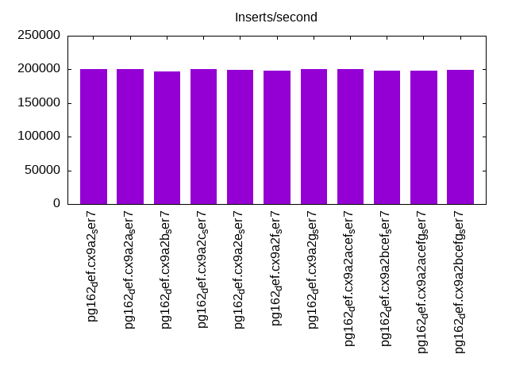
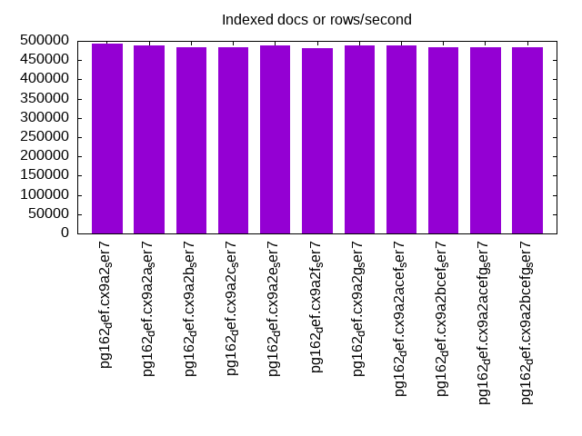
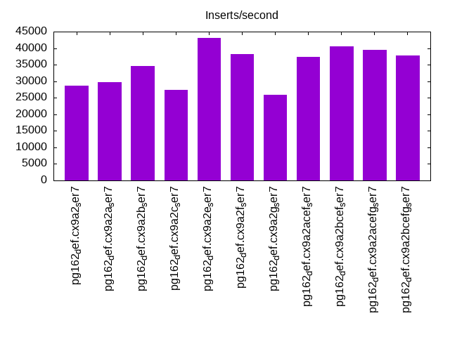
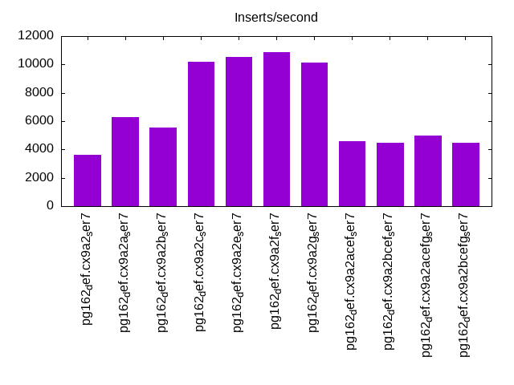
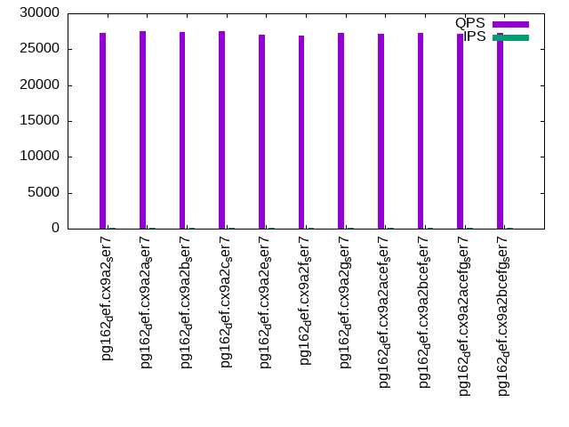
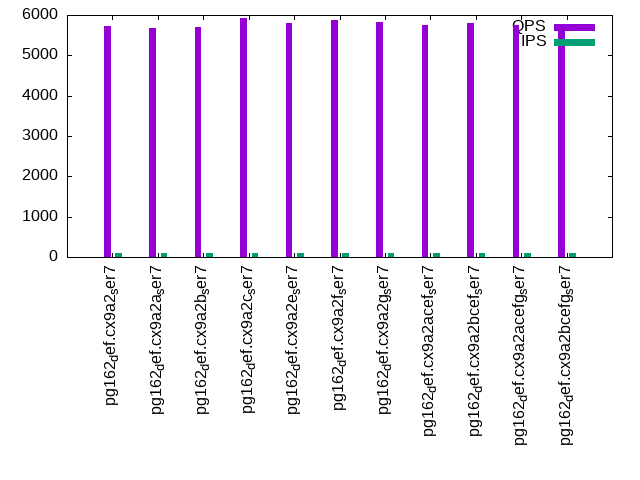
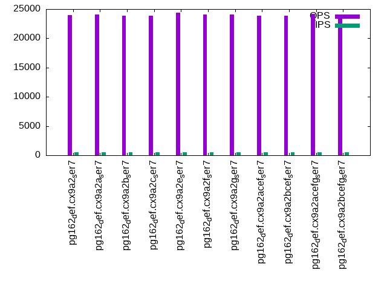
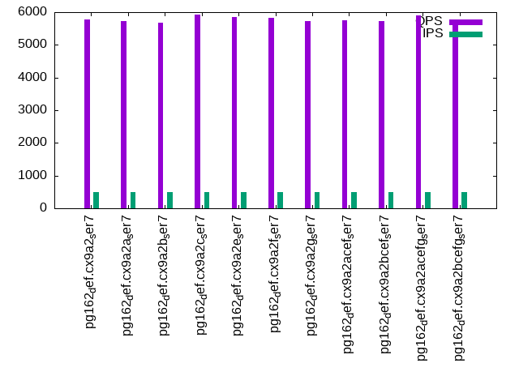
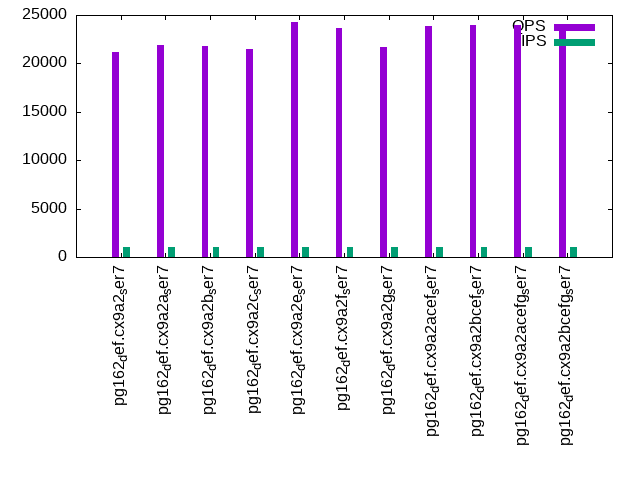
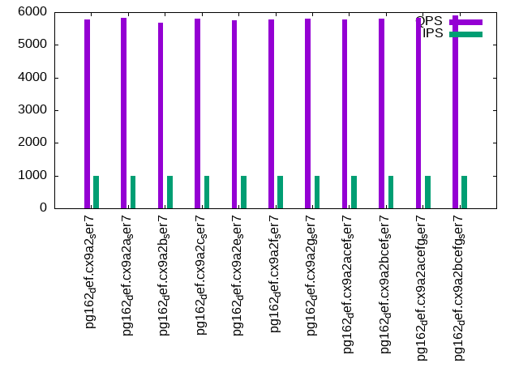

This is a report for the insert benchmark with 60M docs and 1 client(s). It is generated by scripts (bash, awk, sed) and Tufte might not be impressed. An overview of the insert benchmark is here and a short update is here. Below, by DBMS, I mean DBMS+version.config. An example is my8020.c10b40 where my means MySQL, 8020 is version 8.0.20 and c10b40 is the name for the configuration file.
The test server has 8 AMD cores, 32G RAM and an NVMe SSD. It is described here as the SER7 The benchmark was run with 1 client and there were 1 or 3 connections per client (1 for queries or inserts without rate limits, 1+1 for rate limited inserts+deletes). It uses 1 table. It loads 60M rows per table without secondary indexes, creates 3 secondary indexes per table, then inserts 80m+20m rows per table with a delete per insert to avoid growing the table. It then does 6 read+write tests for 3600s each that do queries as fast as possible with 100,100,500,500,1000,1000 inserts/s and the same for deletes/s per client concurrent with the queries. The database is cached in memory. Clients and the DBMS share one server. The per-database configs are in the per-database subdirectories here.
The tested DBMS are:
The numbers are inserts/s for l.i0, l.i1 and l.i2, indexed docs (or rows) /s for l.x and queries/s for qr100, qp100 thru qr1000, qp1000" The values are the average rate over the entire test for inserts (IPS) and queries (QPS). The range of values for IPS and QPS is split into 3 parts: bottom 25%, middle 50%, top 25%. Values in the bottom 25% have a red background, values in the top 25% have a green background and values in the middle have no color. A gray background is used for values that can be ignored because the DBMS did not sustain the target insert rate. Red backgrounds are not used when the minimum value is within 80% of the max value.
| dbms | l.i0 | l.x | l.i1 | l.i2 | qr100 | qp100 | qr500 | qp500 | qr1000 | qp1000 |
|---|---|---|---|---|---|---|---|---|---|---|
| pg162_def.cx9a2_ser7 | 200669 | 491804 | 28756 | 3599 | 27238 | 5722 | 24002 | 5770 | 21156 | 5772 |
| pg162_def.cx9a2a_ser7 | 200669 | 487806 | 29630 | 6264 | 27512 | 5678 | 24091 | 5736 | 21921 | 5824 |
| pg162_def.cx9a2b_ser7 | 197368 | 483872 | 34527 | 5529 | 27440 | 5704 | 23815 | 5688 | 21768 | 5667 |
| pg162_def.cx9a2c_ser7 | 200000 | 483872 | 27407 | 10214 | 27561 | 5918 | 23868 | 5914 | 21497 | 5808 |
| pg162_def.cx9a2e_ser7 | 199336 | 487806 | 43011 | 10515 | 27083 | 5800 | 24421 | 5853 | 24230 | 5746 |
| pg162_def.cx9a2f_ser7 | 198675 | 480001 | 38259 | 10887 | 26915 | 5870 | 24075 | 5817 | 23616 | 5766 |
| pg162_def.cx9a2g_ser7 | 200669 | 487806 | 25873 | 10126 | 27320 | 5820 | 24049 | 5739 | 21676 | 5810 |
| pg162_def.cx9a2acef_ser7 | 200669 | 487806 | 37313 | 4572 | 27106 | 5758 | 23876 | 5759 | 23832 | 5784 |
| pg162_def.cx9a2bcef_ser7 | 198675 | 483872 | 40547 | 4466 | 27306 | 5808 | 23902 | 5727 | 24014 | 5802 |
| pg162_def.cx9a2acefg_ser7 | 198020 | 483872 | 39584 | 4996 | 27205 | 5755 | 24201 | 5911 | 23954 | 5829 |
| pg162_def.cx9a2bcefg_ser7 | 199336 | 483872 | 37843 | 4459 | 27216 | 5653 | 23968 | 5770 | 24042 | 5897 |
This table has relative throughput, throughput for the DBMS relative to the DBMS in the first line, using the absolute throughput from the previous table. Values less than 0.95 have a yellow background. Values greater than 1.05 have a blue background.
| dbms | l.i0 | l.x | l.i1 | l.i2 | qr100 | qp100 | qr500 | qp500 | qr1000 | qp1000 |
|---|---|---|---|---|---|---|---|---|---|---|
| pg162_def.cx9a2_ser7 | 1.00 | 1.00 | 1.00 | 1.00 | 1.00 | 1.00 | 1.00 | 1.00 | 1.00 | 1.00 |
| pg162_def.cx9a2a_ser7 | 1.00 | 0.99 | 1.03 | 1.74 | 1.01 | 0.99 | 1.00 | 0.99 | 1.04 | 1.01 |
| pg162_def.cx9a2b_ser7 | 0.98 | 0.98 | 1.20 | 1.54 | 1.01 | 1.00 | 0.99 | 0.99 | 1.03 | 0.98 |
| pg162_def.cx9a2c_ser7 | 1.00 | 0.98 | 0.95 | 2.84 | 1.01 | 1.03 | 0.99 | 1.02 | 1.02 | 1.01 |
| pg162_def.cx9a2e_ser7 | 0.99 | 0.99 | 1.50 | 2.92 | 0.99 | 1.01 | 1.02 | 1.01 | 1.15 | 1.00 |
| pg162_def.cx9a2f_ser7 | 0.99 | 0.98 | 1.33 | 3.03 | 0.99 | 1.03 | 1.00 | 1.01 | 1.12 | 1.00 |
| pg162_def.cx9a2g_ser7 | 1.00 | 0.99 | 0.90 | 2.81 | 1.00 | 1.02 | 1.00 | 0.99 | 1.02 | 1.01 |
| pg162_def.cx9a2acef_ser7 | 1.00 | 0.99 | 1.30 | 1.27 | 1.00 | 1.01 | 0.99 | 1.00 | 1.13 | 1.00 |
| pg162_def.cx9a2bcef_ser7 | 0.99 | 0.98 | 1.41 | 1.24 | 1.00 | 1.02 | 1.00 | 0.99 | 1.14 | 1.01 |
| pg162_def.cx9a2acefg_ser7 | 0.99 | 0.98 | 1.38 | 1.39 | 1.00 | 1.01 | 1.01 | 1.02 | 1.13 | 1.01 |
| pg162_def.cx9a2bcefg_ser7 | 0.99 | 0.98 | 1.32 | 1.24 | 1.00 | 0.99 | 1.00 | 1.00 | 1.14 | 1.02 |
This lists the average rate of inserts/s for the tests that do inserts concurrent with queries. For such tests the query rate is listed in the table above. The read+write tests are setup so that the insert rate should match the target rate every second. Cells that are not at least 95% of the target have a red background to indicate a failure to satisfy the target.
| dbms | qr100.L1 | qp100.L2 | qr500.L3 | qp500.L4 | qr1000.L5 | qp1000.L6 |
|---|---|---|---|---|---|---|
| pg162_def.cx9a2_ser7 | 100 | 100 | 499 | 499 | 999 | 999 |
| pg162_def.cx9a2a_ser7 | 100 | 100 | 499 | 499 | 999 | 999 |
| pg162_def.cx9a2b_ser7 | 100 | 100 | 499 | 499 | 999 | 999 |
| pg162_def.cx9a2c_ser7 | 100 | 100 | 499 | 499 | 998 | 999 |
| pg162_def.cx9a2e_ser7 | 100 | 100 | 499 | 499 | 999 | 999 |
| pg162_def.cx9a2f_ser7 | 100 | 100 | 499 | 499 | 999 | 999 |
| pg162_def.cx9a2g_ser7 | 100 | 100 | 499 | 499 | 999 | 999 |
| pg162_def.cx9a2acef_ser7 | 100 | 100 | 499 | 499 | 999 | 999 |
| pg162_def.cx9a2bcef_ser7 | 100 | 100 | 499 | 499 | 999 | 999 |
| pg162_def.cx9a2acefg_ser7 | 100 | 100 | 499 | 499 | 999 | 999 |
| pg162_def.cx9a2bcefg_ser7 | 100 | 100 | 499 | 499 | 999 | 999 |
| target | 100 | 100 | 500 | 500 | 1000 | 1000 |
l.i0: load without secondary indexes. Graphs for performance per 1-second interval are here.
Average throughput:
Insert response time histogram: each cell has the percentage of responses that take <= the time in the header and max is the max response time in seconds. For the max column values in the top 25% of the range have a red background and in the bottom 25% of the range have a green background. The red background is not used when the min value is within 80% of the max value.
| dbms | 256us | 1ms | 4ms | 16ms | 64ms | 256ms | 1s | 4s | 16s | gt | max |
|---|---|---|---|---|---|---|---|---|---|---|---|
| pg162_def.cx9a2_ser7 | 99.976 | 0.024 | 0.002 | ||||||||
| pg162_def.cx9a2a_ser7 | 99.971 | 0.029 | 0.002 | ||||||||
| pg162_def.cx9a2b_ser7 | 99.967 | 0.033 | 0.002 | ||||||||
| pg162_def.cx9a2c_ser7 | 99.972 | 0.028 | 0.002 | ||||||||
| pg162_def.cx9a2e_ser7 | 99.978 | 0.022 | 0.002 | ||||||||
| pg162_def.cx9a2f_ser7 | 99.970 | 0.030 | 0.002 | ||||||||
| pg162_def.cx9a2g_ser7 | 99.972 | 0.028 | 0.002 | ||||||||
| pg162_def.cx9a2acef_ser7 | 99.972 | 0.028 | 0.002 | ||||||||
| pg162_def.cx9a2bcef_ser7 | 99.976 | 0.024 | 0.002 | ||||||||
| pg162_def.cx9a2acefg_ser7 | 99.971 | 0.029 | 0.002 | ||||||||
| pg162_def.cx9a2bcefg_ser7 | 99.969 | 0.032 | 0.002 |
Performance metrics for the DBMS listed above. Some are normalized by throughput, others are not. Legend for results is here.
ips qps rps rmbps wps wmbps rpq rkbpq wpi wkbpi csps cpups cspq cpupq dbgb1 dbgb2 rss maxop p50 p99 tag 200669 0 0 0.0 229.4 84.6 0.000 0.000 0.001 0.431 26115 11.1 0.130 4 5.7 15.6 0.5 0.002 198676 188493 pg162_def.cx9a2_ser7 200669 0 0 0.0 229.7 84.7 0.000 0.000 0.001 0.432 26123 11.2 0.130 4 5.7 15.6 0.5 0.002 199252 190292 pg162_def.cx9a2a_ser7 197368 0 0 0.0 226.9 83.6 0.000 0.000 0.001 0.434 25887 11.2 0.131 5 5.7 15.6 0.5 0.002 197785 184710 pg162_def.cx9a2b_ser7 200000 0 0 0.0 228.5 84.1 0.000 0.000 0.001 0.430 26087 11.5 0.130 5 5.7 15.6 2.9 0.002 197887 193087 pg162_def.cx9a2c_ser7 199336 0 0 0.0 228.1 83.9 0.000 0.000 0.001 0.431 25973 11.5 0.130 5 5.7 15.6 2.3 0.002 197500 184504 pg162_def.cx9a2e_ser7 198675 0 0 0.0 228.2 84.0 0.000 0.000 0.001 0.433 26025 11.4 0.131 5 5.7 15.6 5.8 0.002 197876 186447 pg162_def.cx9a2f_ser7 200669 0 0 0.0 229.9 84.8 0.000 0.000 0.001 0.433 26132 11.2 0.130 4 5.7 15.6 5.8 0.002 199569 193184 pg162_def.cx9a2g_ser7 200669 0 0 0.0 230.2 84.7 0.000 0.000 0.001 0.432 26280 11.4 0.131 5 5.7 15.6 0.1 0.002 199451 190988 pg162_def.cx9a2acef_ser7 198675 0 0 0.0 228.2 83.9 0.000 0.000 0.001 0.433 26075 11.6 0.131 5 5.7 15.6 0.1 0.002 197689 186897 pg162_def.cx9a2bcef_ser7 198020 0 0 0.0 227.9 83.8 0.000 0.000 0.001 0.433 26063 11.7 0.132 5 5.7 15.6 0.1 0.002 197979 187996 pg162_def.cx9a2acefg_ser7 199336 0 0 0.0 228.5 84.2 0.000 0.000 0.001 0.432 26155 11.6 0.131 5 5.7 15.6 0.5 0.002 198776 188094 pg162_def.cx9a2bcefg_ser7
l.x: create secondary indexes.
Average throughput:
Performance metrics for the DBMS listed above. Some are normalized by throughput, others are not. Legend for results is here.
ips qps rps rmbps wps wmbps rpq rkbpq wpi wkbpi csps cpups cspq cpupq dbgb1 dbgb2 rss maxop p50 p99 tag 491804 0 0 0.0 364.7 170.8 0.000 0.000 0.001 0.356 807 5.7 0.002 1 11.5 26.6 6.0 0.002 NA NA pg162_def.cx9a2_ser7 487806 0 0 0.0 344.5 161.4 0.000 0.000 0.001 0.339 764 5.8 0.002 1 11.5 26.6 6.0 0.002 NA NA pg162_def.cx9a2a_ser7 483872 0 0 0.0 352.4 165.0 0.000 0.000 0.001 0.349 752 5.7 0.002 1 11.5 26.6 6.0 0.002 NA NA pg162_def.cx9a2b_ser7 483872 0 0 0.0 356.8 167.6 0.000 0.000 0.001 0.355 1001 5.8 0.002 1 11.5 26.6 6.0 0.002 NA NA pg162_def.cx9a2c_ser7 487806 0 0 0.0 354.4 165.6 0.000 0.000 0.001 0.348 697 5.8 0.001 1 11.5 26.6 6.0 0.002 NA NA pg162_def.cx9a2e_ser7 480001 0 0 0.0 374.7 175.7 0.000 0.000 0.001 0.375 769 5.7 0.002 1 11.5 26.6 6.0 0.002 NA NA pg162_def.cx9a2f_ser7 487806 0 0 0.0 344.3 161.4 0.000 0.000 0.001 0.339 766 5.7 0.002 1 11.5 26.6 6.0 0.002 NA NA pg162_def.cx9a2g_ser7 487806 0 0 0.0 344.4 161.7 0.000 0.000 0.001 0.339 859 6.2 0.002 1 11.5 26.6 6.0 0.002 NA NA pg162_def.cx9a2acef_ser7 483872 0 0 0.0 332.4 156.0 0.000 0.000 0.001 0.330 903 5.9 0.002 1 11.5 26.6 6.0 0.003 NA NA pg162_def.cx9a2bcef_ser7 483872 0 0 0.0 350.1 163.7 0.000 0.000 0.001 0.346 840 6.0 0.002 1 11.5 26.6 6.0 0.002 NA NA pg162_def.cx9a2acefg_ser7 483872 0 0 0.0 344.6 161.6 0.000 0.000 0.001 0.342 805 6.2 0.002 1 11.5 26.6 6.0 0.002 NA NA pg162_def.cx9a2bcefg_ser7
l.i1: continue load after secondary indexes created with 50 inserts per transaction. Graphs for performance per 1-second interval are here.
Average throughput:
Insert response time histogram: each cell has the percentage of responses that take <= the time in the header and max is the max response time in seconds. For the max column values in the top 25% of the range have a red background and in the bottom 25% of the range have a green background. The red background is not used when the min value is within 80% of the max value.
| dbms | 256us | 1ms | 4ms | 16ms | 64ms | 256ms | 1s | 4s | 16s | gt | max |
|---|---|---|---|---|---|---|---|---|---|---|---|
| pg162_def.cx9a2_ser7 | 81.971 | 18.013 | 0.007 | 0.009 | 0.050 | ||||||
| pg162_def.cx9a2a_ser7 | 81.212 | 18.777 | 0.009 | 0.002 | nonzero | 0.070 | |||||
| pg162_def.cx9a2b_ser7 | 82.837 | 17.153 | 0.004 | 0.006 | 0.062 | ||||||
| pg162_def.cx9a2c_ser7 | 76.967 | 23.025 | 0.006 | 0.002 | 0.038 | ||||||
| pg162_def.cx9a2e_ser7 | 85.709 | 14.281 | 0.009 | 0.002 | 0.051 | ||||||
| pg162_def.cx9a2f_ser7 | 82.554 | 17.445 | 0.001 | nonzero | 0.027 | ||||||
| pg162_def.cx9a2g_ser7 | 78.513 | 21.474 | 0.011 | 0.002 | 0.037 | ||||||
| pg162_def.cx9a2acef_ser7 | 82.182 | 17.817 | 0.001 | nonzero | 0.033 | ||||||
| pg162_def.cx9a2bcef_ser7 | 85.974 | 14.022 | 0.003 | 0.001 | 0.037 | ||||||
| pg162_def.cx9a2acefg_ser7 | 83.595 | 16.396 | 0.007 | 0.002 | 0.050 | ||||||
| pg162_def.cx9a2bcefg_ser7 | 81.515 | 18.472 | 0.010 | 0.003 | 0.057 |
Delete response time histogram: each cell has the percentage of responses that take <= the time in the header and max is the max response time in seconds. For the max column values in the top 25% of the range have a red background and in the bottom 25% of the range have a green background. The red background is not used when the min value is within 80% of the max value.
| dbms | 256us | 1ms | 4ms | 16ms | 64ms | 256ms | 1s | 4s | 16s | gt | max |
|---|---|---|---|---|---|---|---|---|---|---|---|
| pg162_def.cx9a2_ser7 | 75.456 | 8.218 | 2.404 | 13.905 | 0.017 | 0.062 | |||||
| pg162_def.cx9a2a_ser7 | 75.639 | 8.588 | 2.962 | 12.788 | 0.025 | 0.044 | |||||
| pg162_def.cx9a2b_ser7 | 76.964 | 7.088 | 8.551 | 7.380 | 0.016 | 0.061 | |||||
| pg162_def.cx9a2c_ser7 | 71.894 | 7.740 | 7.787 | 12.578 | 0.001 | 0.036 | |||||
| pg162_def.cx9a2e_ser7 | 73.990 | 10.769 | 12.430 | 2.809 | 0.001 | 0.033 | |||||
| pg162_def.cx9a2f_ser7 | 75.740 | 7.388 | 12.067 | 4.805 | nonzero | 0.023 | |||||
| pg162_def.cx9a2g_ser7 | 74.573 | 7.506 | 1.371 | 16.548 | 0.002 | 0.035 | |||||
| pg162_def.cx9a2acef_ser7 | 73.845 | 7.153 | 13.355 | 5.646 | 0.001 | 0.031 | |||||
| pg162_def.cx9a2bcef_ser7 | 73.363 | 9.679 | 12.004 | 4.950 | 0.003 | 0.057 | |||||
| pg162_def.cx9a2acefg_ser7 | 72.892 | 10.205 | 11.910 | 4.991 | 0.002 | 0.051 | |||||
| pg162_def.cx9a2bcefg_ser7 | 74.142 | 7.225 | 12.959 | 5.672 | 0.003 | 0.057 |
Performance metrics for the DBMS listed above. Some are normalized by throughput, others are not. Legend for results is here.
ips qps rps rmbps wps wmbps rpq rkbpq wpi wkbpi csps cpups cspq cpupq dbgb1 dbgb2 rss maxop p50 p99 tag 28756 0 0 0.0 147.7 41.6 0.000 0.000 0.005 1.483 14137 10.5 0.492 29 15.8 55.8 10.6 0.050 8940 3347 pg162_def.cx9a2_ser7 29630 0 0 0.0 153.4 43.3 0.000 0.000 0.005 1.498 14560 10.7 0.491 29 15.8 55.8 15.8 0.070 9489 3396 pg162_def.cx9a2a_ser7 34527 0 0 0.0 177.2 50.0 0.000 0.000 0.005 1.484 16914 11.1 0.490 26 15.8 55.8 12.2 0.062 25521 3346 pg162_def.cx9a2b_ser7 27407 0 0 0.0 140.7 39.6 0.000 0.000 0.005 1.479 13573 10.7 0.495 31 15.6 55.7 14.2 0.038 12343 3596 pg162_def.cx9a2c_ser7 43011 0 0 0.0 228.4 61.4 0.000 0.000 0.005 1.461 21005 12.6 0.488 23 15.0 55.1 12.9 0.051 52692 8346 pg162_def.cx9a2e_ser7 38259 0 0 0.0 202.3 54.5 0.000 0.000 0.005 1.458 18753 12.1 0.490 25 15.1 55.1 14.0 0.027 49845 5843 pg162_def.cx9a2f_ser7 25873 0 0 0.0 132.7 37.7 0.000 0.000 0.005 1.490 12761 10.2 0.493 32 15.9 55.9 13.9 0.037 8340 4045 pg162_def.cx9a2g_ser7 37313 0 0 0.0 200.9 53.1 0.000 0.000 0.005 1.458 18379 12.2 0.493 26 14.9 55.0 12.1 0.033 44903 6044 pg162_def.cx9a2acef_ser7 40547 0 0 0.0 218.5 57.7 0.000 0.000 0.005 1.458 19894 12.5 0.491 25 15.0 55.0 13.3 0.037 51844 6243 pg162_def.cx9a2bcef_ser7 39584 0 0 0.0 212.3 56.4 0.000 0.000 0.005 1.458 19452 12.4 0.491 25 15.0 55.0 14.9 0.050 50145 6244 pg162_def.cx9a2acefg_ser7 37843 0 0 0.0 201.4 53.8 0.000 0.000 0.005 1.456 18530 12.2 0.490 26 14.9 55.0 12.6 0.057 48247 7090 pg162_def.cx9a2bcefg_ser7
l.i2: continue load after secondary indexes created with 5 inserts per transaction. Graphs for performance per 1-second interval are here.
Average throughput:
Insert response time histogram: each cell has the percentage of responses that take <= the time in the header and max is the max response time in seconds. For the max column values in the top 25% of the range have a red background and in the bottom 25% of the range have a green background. The red background is not used when the min value is within 80% of the max value.
| dbms | 256us | 1ms | 4ms | 16ms | 64ms | 256ms | 1s | 4s | 16s | gt | max |
|---|---|---|---|---|---|---|---|---|---|---|---|
| pg162_def.cx9a2_ser7 | 79.110 | 20.890 | nonzero | 0.003 | |||||||
| pg162_def.cx9a2a_ser7 | 78.525 | 21.475 | nonzero | nonzero | 0.022 | ||||||
| pg162_def.cx9a2b_ser7 | 80.168 | 19.832 | nonzero | nonzero | nonzero | 0.018 | |||||
| pg162_def.cx9a2c_ser7 | 82.829 | 17.171 | nonzero | 0.002 | |||||||
| pg162_def.cx9a2e_ser7 | 81.745 | 18.255 | nonzero | nonzero | 0.037 | ||||||
| pg162_def.cx9a2f_ser7 | 81.345 | 18.655 | nonzero | nonzero | 0.008 | ||||||
| pg162_def.cx9a2g_ser7 | 81.082 | 18.918 | nonzero | 0.004 | |||||||
| pg162_def.cx9a2acef_ser7 | 79.101 | 20.899 | nonzero | nonzero | 0.007 | ||||||
| pg162_def.cx9a2bcef_ser7 | 79.277 | 20.722 | nonzero | 0.003 | |||||||
| pg162_def.cx9a2acefg_ser7 | 80.082 | 19.918 | nonzero | nonzero | nonzero | 0.019 | |||||
| pg162_def.cx9a2bcefg_ser7 | 79.180 | 20.820 | nonzero | nonzero | 0.018 |
Delete response time histogram: each cell has the percentage of responses that take <= the time in the header and max is the max response time in seconds. For the max column values in the top 25% of the range have a red background and in the bottom 25% of the range have a green background. The red background is not used when the min value is within 80% of the max value.
| dbms | 256us | 1ms | 4ms | 16ms | 64ms | 256ms | 1s | 4s | 16s | gt | max |
|---|---|---|---|---|---|---|---|---|---|---|---|
| pg162_def.cx9a2_ser7 | 79.176 | 0.028 | 2.773 | 18.023 | nonzero | 0.018 | |||||
| pg162_def.cx9a2a_ser7 | 78.178 | 0.606 | 15.458 | 5.758 | nonzero | 0.021 | |||||
| pg162_def.cx9a2b_ser7 | 80.153 | 0.057 | 10.703 | 9.087 | nonzero | 0.018 | |||||
| pg162_def.cx9a2c_ser7 | 82.399 | 1.103 | 16.492 | 0.007 | 0.006 | ||||||
| pg162_def.cx9a2e_ser7 | 80.874 | 2.394 | 16.731 | 0.001 | nonzero | 0.037 | |||||
| pg162_def.cx9a2f_ser7 | 79.878 | 3.680 | 16.442 | nonzero | 0.008 | ||||||
| pg162_def.cx9a2g_ser7 | 80.652 | 0.405 | 18.943 | 0.001 | 0.006 | ||||||
| pg162_def.cx9a2acef_ser7 | 79.147 | 0.057 | 7.066 | 13.729 | 0.013 | ||||||
| pg162_def.cx9a2bcef_ser7 | 79.273 | 0.122 | 5.587 | 15.017 | nonzero | 0.037 | |||||
| pg162_def.cx9a2acefg_ser7 | 80.025 | 0.173 | 7.923 | 11.879 | nonzero | 0.022 | |||||
| pg162_def.cx9a2bcefg_ser7 | 79.182 | 0.102 | 5.502 | 15.214 | nonzero | 0.027 |
Performance metrics for the DBMS listed above. Some are normalized by throughput, others are not. Legend for results is here.
ips qps rps rmbps wps wmbps rpq rkbpq wpi wkbpi csps cpups cspq cpupq dbgb1 dbgb2 rss maxop p50 p99 tag 3599 0 0 0.0 52.9 8.1 0.000 0.000 0.015 2.318 16508 7.8 4.587 173 16.0 55.5 13.0 0.003 764 524 pg162_def.cx9a2_ser7 6264 0 0 0.0 42.3 9.4 0.000 0.000 0.007 1.545 28761 8.8 4.592 112 15.9 56.0 3.8 0.022 1528 689 pg162_def.cx9a2a_ser7 5529 0 0 0.0 44.3 10.0 0.000 0.000 0.008 1.843 25427 8.5 4.599 123 16.0 56.0 12.9 0.018 1084 659 pg162_def.cx9a2b_ser7 10214 0 0 0.0 51.0 12.7 0.000 0.000 0.005 1.268 46909 10.2 4.592 80 15.8 55.9 4.9 0.002 2567 1344 pg162_def.cx9a2c_ser7 10515 0 0 0.0 50.5 12.7 0.000 0.000 0.005 1.240 48288 10.3 4.592 78 15.2 55.2 11.8 0.037 3037 1414 pg162_def.cx9a2e_ser7 10887 0 0 0.0 52.2 13.1 0.000 0.000 0.005 1.231 49772 10.4 4.572 76 15.3 55.3 9.0 0.008 3312 1488 pg162_def.cx9a2f_ser7 10126 0 0 0.0 49.9 12.6 0.000 0.000 0.005 1.271 46458 10.1 4.588 80 16.0 56.1 16.2 0.004 2857 1488 pg162_def.cx9a2g_ser7 4572 0 0 0.0 39.2 8.4 0.000 0.000 0.009 1.891 21096 8.5 4.614 149 15.1 55.2 6.7 0.007 1059 764 pg162_def.cx9a2acef_ser7 4466 0 0 0.0 38.5 8.3 0.000 0.000 0.009 1.901 20634 8.5 4.620 152 15.1 55.2 15.2 0.003 1004 679 pg162_def.cx9a2bcef_ser7 4996 0 0 0.0 41.2 8.9 0.000 0.000 0.008 1.822 22927 8.6 4.589 138 15.1 55.2 4.1 0.019 1109 774 pg162_def.cx9a2acefg_ser7 4459 0 0 0.0 38.4 8.3 0.000 0.000 0.009 1.909 20610 8.5 4.622 152 15.1 55.1 15.2 0.018 1029 749 pg162_def.cx9a2bcefg_ser7
qr100.L1: range queries with 100 insert/s per client. Graphs for performance per 1-second interval are here.
Average throughput:
Query response time histogram: each cell has the percentage of responses that take <= the time in the header and max is the max response time in seconds. For max values in the top 25% of the range have a red background and in the bottom 25% of the range have a green background. The red background is not used when the min value is within 80% of the max value.
| dbms | 256us | 1ms | 4ms | 16ms | 64ms | 256ms | 1s | 4s | 16s | gt | max |
|---|---|---|---|---|---|---|---|---|---|---|---|
| pg162_def.cx9a2_ser7 | 99.995 | 0.005 | nonzero | 0.003 | |||||||
| pg162_def.cx9a2a_ser7 | 99.994 | 0.006 | nonzero | 0.002 | |||||||
| pg162_def.cx9a2b_ser7 | 99.994 | 0.006 | nonzero | 0.001 | |||||||
| pg162_def.cx9a2c_ser7 | 99.994 | 0.006 | nonzero | 0.001 | |||||||
| pg162_def.cx9a2e_ser7 | 99.994 | 0.006 | nonzero | 0.002 | |||||||
| pg162_def.cx9a2f_ser7 | 99.993 | 0.007 | nonzero | 0.001 | |||||||
| pg162_def.cx9a2g_ser7 | 99.995 | 0.005 | nonzero | 0.001 | |||||||
| pg162_def.cx9a2acef_ser7 | 99.994 | 0.006 | nonzero | 0.002 | |||||||
| pg162_def.cx9a2bcef_ser7 | 99.993 | 0.007 | nonzero | nonzero | 0.004 | ||||||
| pg162_def.cx9a2acefg_ser7 | 99.994 | 0.006 | nonzero | nonzero | 0.004 | ||||||
| pg162_def.cx9a2bcefg_ser7 | 99.994 | 0.006 | nonzero | 0.001 |
Insert response time histogram: each cell has the percentage of responses that take <= the time in the header and max is the max response time in seconds. For max values in the top 25% of the range have a red background and in the bottom 25% of the range have a green background. The red background is not used when the min value is within 80% of the max value.
| dbms | 256us | 1ms | 4ms | 16ms | 64ms | 256ms | 1s | 4s | 16s | gt | max |
|---|---|---|---|---|---|---|---|---|---|---|---|
| pg162_def.cx9a2_ser7 | 0.153 | 99.694 | 0.153 | 0.006 | |||||||
| pg162_def.cx9a2a_ser7 | 0.167 | 99.639 | 0.194 | 0.006 | |||||||
| pg162_def.cx9a2b_ser7 | 0.153 | 99.764 | 0.083 | 0.006 | |||||||
| pg162_def.cx9a2c_ser7 | 0.153 | 99.681 | 0.167 | 0.006 | |||||||
| pg162_def.cx9a2e_ser7 | 0.222 | 99.736 | 0.042 | 0.006 | |||||||
| pg162_def.cx9a2f_ser7 | 0.194 | 99.694 | 0.111 | 0.006 | |||||||
| pg162_def.cx9a2g_ser7 | 0.111 | 99.722 | 0.167 | 0.006 | |||||||
| pg162_def.cx9a2acef_ser7 | 0.236 | 99.625 | 0.139 | 0.006 | |||||||
| pg162_def.cx9a2bcef_ser7 | 0.194 | 99.653 | 0.153 | 0.006 | |||||||
| pg162_def.cx9a2acefg_ser7 | 0.250 | 99.681 | 0.069 | 0.006 | |||||||
| pg162_def.cx9a2bcefg_ser7 | 0.375 | 99.514 | 0.111 | 0.006 |
Delete response time histogram: each cell has the percentage of responses that take <= the time in the header and max is the max response time in seconds. For max values in the top 25% of the range have a red background and in the bottom 25% of the range have a green background. The red background is not used when the min value is within 80% of the max value.
| dbms | 256us | 1ms | 4ms | 16ms | 64ms | 256ms | 1s | 4s | 16s | gt | max |
|---|---|---|---|---|---|---|---|---|---|---|---|
| pg162_def.cx9a2_ser7 | 0.222 | 26.472 | 73.292 | 0.014 | 0.004 | ||||||
| pg162_def.cx9a2a_ser7 | 0.181 | 26.306 | 73.514 | 0.004 | |||||||
| pg162_def.cx9a2b_ser7 | 0.056 | 29.306 | 70.639 | 0.004 | |||||||
| pg162_def.cx9a2c_ser7 | 0.111 | 30.306 | 67.417 | 2.167 | 0.005 | ||||||
| pg162_def.cx9a2e_ser7 | 0.083 | 29.889 | 69.972 | 0.056 | 0.004 | ||||||
| pg162_def.cx9a2f_ser7 | 0.236 | 27.153 | 72.611 | 0.004 | |||||||
| pg162_def.cx9a2g_ser7 | 0.153 | 27.917 | 70.028 | 1.903 | 0.005 | ||||||
| pg162_def.cx9a2acef_ser7 | 0.028 | 29.764 | 70.069 | 0.139 | 0.004 | ||||||
| pg162_def.cx9a2bcef_ser7 | 0.069 | 28.056 | 68.792 | 3.083 | 0.005 | ||||||
| pg162_def.cx9a2acefg_ser7 | 0.014 | 25.556 | 73.431 | 1.000 | 0.005 | ||||||
| pg162_def.cx9a2bcefg_ser7 | 0.708 | 31.625 | 67.667 | 0.004 |
Performance metrics for the DBMS listed above. Some are normalized by throughput, others are not. Legend for results is here.
ips qps rps rmbps wps wmbps rpq rkbpq wpi wkbpi csps cpups cspq cpupq dbgb1 dbgb2 rss maxop p50 p99 tag 100 27238 0 0.0 56.5 1.5 0.000 0.000 0.566 15.106 104134 4.0 3.823 12 16.0 49.2 1.3 0.003 27302 20508 pg162_def.cx9a2_ser7 100 27512 0 0.0 56.6 1.5 0.000 0.000 0.567 15.127 105174 4.2 3.823 12 15.9 54.6 1.3 0.002 27623 20763 pg162_def.cx9a2a_ser7 100 27440 0 0.0 56.4 1.5 0.000 0.000 0.565 15.117 104928 4.4 3.824 13 16.0 52.1 1.3 0.001 27492 23671 pg162_def.cx9a2b_ser7 100 27561 0 0.0 55.9 1.5 0.000 0.000 0.560 15.138 105493 4.2 3.828 12 15.8 54.5 1.3 0.001 27672 21353 pg162_def.cx9a2c_ser7 100 27083 0 0.0 53.4 1.5 0.000 0.000 0.535 15.527 103535 4.2 3.823 12 15.2 53.7 1.2 0.002 27220 19834 pg162_def.cx9a2e_ser7 100 26915 0 0.0 53.5 1.5 0.000 0.000 0.536 15.513 103056 4.5 3.829 13 15.3 53.8 1.2 0.001 27185 19670 pg162_def.cx9a2f_ser7 100 27320 0 0.0 56.3 1.5 0.000 0.000 0.564 15.078 104459 4.0 3.824 12 16.0 54.7 1.3 0.001 27430 20108 pg162_def.cx9a2g_ser7 100 27106 0 0.0 53.1 1.5 0.000 0.000 0.532 15.569 103732 4.3 3.827 13 15.1 51.2 1.2 0.002 27202 20186 pg162_def.cx9a2acef_ser7 100 27306 0 0.0 53.1 1.5 0.000 0.000 0.532 15.604 104525 4.3 3.828 13 15.1 51.2 1.2 0.004 27457 20265 pg162_def.cx9a2bcef_ser7 100 27205 0 0.0 53.2 1.5 0.000 0.000 0.533 15.578 104139 4.4 3.828 13 15.1 51.2 1.2 0.004 27292 20840 pg162_def.cx9a2acefg_ser7 100 27216 0 0.0 53.2 1.5 0.000 0.000 0.534 15.605 104184 4.5 3.828 13 15.1 51.1 1.2 0.001 27369 20249 pg162_def.cx9a2bcefg_ser7
qp100.L2: point queries with 100 insert/s per client. Graphs for performance per 1-second interval are here.
Average throughput:
Query response time histogram: each cell has the percentage of responses that take <= the time in the header and max is the max response time in seconds. For max values in the top 25% of the range have a red background and in the bottom 25% of the range have a green background. The red background is not used when the min value is within 80% of the max value.
| dbms | 256us | 1ms | 4ms | 16ms | 64ms | 256ms | 1s | 4s | 16s | gt | max |
|---|---|---|---|---|---|---|---|---|---|---|---|
| pg162_def.cx9a2_ser7 | 99.689 | 0.310 | nonzero | 0.001 | |||||||
| pg162_def.cx9a2a_ser7 | 99.703 | 0.297 | nonzero | 0.001 | |||||||
| pg162_def.cx9a2b_ser7 | 99.721 | 0.279 | nonzero | 0.002 | |||||||
| pg162_def.cx9a2c_ser7 | 99.682 | 0.318 | nonzero | 0.002 | |||||||
| pg162_def.cx9a2e_ser7 | 99.724 | 0.276 | nonzero | 0.002 | |||||||
| pg162_def.cx9a2f_ser7 | 99.667 | 0.333 | nonzero | 0.001 | |||||||
| pg162_def.cx9a2g_ser7 | 99.718 | 0.282 | nonzero | 0.001 | |||||||
| pg162_def.cx9a2acef_ser7 | 99.720 | 0.280 | nonzero | 0.001 | |||||||
| pg162_def.cx9a2bcef_ser7 | 99.686 | 0.314 | nonzero | 0.002 | |||||||
| pg162_def.cx9a2acefg_ser7 | 99.695 | 0.305 | nonzero | 0.002 | |||||||
| pg162_def.cx9a2bcefg_ser7 | 99.724 | 0.275 | nonzero | 0.002 |
Insert response time histogram: each cell has the percentage of responses that take <= the time in the header and max is the max response time in seconds. For max values in the top 25% of the range have a red background and in the bottom 25% of the range have a green background. The red background is not used when the min value is within 80% of the max value.
| dbms | 256us | 1ms | 4ms | 16ms | 64ms | 256ms | 1s | 4s | 16s | gt | max |
|---|---|---|---|---|---|---|---|---|---|---|---|
| pg162_def.cx9a2_ser7 | 0.056 | 99.778 | 0.167 | 0.006 | |||||||
| pg162_def.cx9a2a_ser7 | 0.028 | 99.764 | 0.208 | 0.006 | |||||||
| pg162_def.cx9a2b_ser7 | 0.167 | 99.778 | 0.056 | 0.006 | |||||||
| pg162_def.cx9a2c_ser7 | 0.014 | 99.764 | 0.222 | 0.006 | |||||||
| pg162_def.cx9a2e_ser7 | 0.028 | 99.875 | 0.097 | 0.006 | |||||||
| pg162_def.cx9a2f_ser7 | 0.014 | 99.764 | 0.222 | 0.006 | |||||||
| pg162_def.cx9a2g_ser7 | 0.056 | 99.778 | 0.167 | 0.006 | |||||||
| pg162_def.cx9a2acef_ser7 | 0.167 | 99.792 | 0.042 | 0.006 | |||||||
| pg162_def.cx9a2bcef_ser7 | 0.097 | 99.722 | 0.181 | 0.006 | |||||||
| pg162_def.cx9a2acefg_ser7 | 0.056 | 99.806 | 0.139 | 0.006 | |||||||
| pg162_def.cx9a2bcefg_ser7 | 0.042 | 99.819 | 0.139 | 0.006 |
Delete response time histogram: each cell has the percentage of responses that take <= the time in the header and max is the max response time in seconds. For max values in the top 25% of the range have a red background and in the bottom 25% of the range have a green background. The red background is not used when the min value is within 80% of the max value.
| dbms | 256us | 1ms | 4ms | 16ms | 64ms | 256ms | 1s | 4s | 16s | gt | max |
|---|---|---|---|---|---|---|---|---|---|---|---|
| pg162_def.cx9a2_ser7 | 0.472 | 29.611 | 69.292 | 0.625 | 0.004 | ||||||
| pg162_def.cx9a2a_ser7 | 0.417 | 29.764 | 69.569 | 0.250 | 0.005 | ||||||
| pg162_def.cx9a2b_ser7 | 0.292 | 29.681 | 69.486 | 0.542 | 0.005 | ||||||
| pg162_def.cx9a2c_ser7 | 0.389 | 30.639 | 68.111 | 0.861 | 0.005 | ||||||
| pg162_def.cx9a2e_ser7 | 0.097 | 30.111 | 69.667 | 0.125 | 0.004 | ||||||
| pg162_def.cx9a2f_ser7 | 0.389 | 28.639 | 69.194 | 1.778 | 0.005 | ||||||
| pg162_def.cx9a2g_ser7 | 0.097 | 29.181 | 70.431 | 0.292 | 0.004 | ||||||
| pg162_def.cx9a2acef_ser7 | 0.028 | 31.458 | 68.375 | 0.139 | 0.004 | ||||||
| pg162_def.cx9a2bcef_ser7 | 0.208 | 31.750 | 66.694 | 1.347 | 0.005 | ||||||
| pg162_def.cx9a2acefg_ser7 | 0.097 | 30.319 | 69.125 | 0.458 | 0.005 | ||||||
| pg162_def.cx9a2bcefg_ser7 | 0.153 | 33.861 | 64.653 | 1.333 | 0.005 |
Performance metrics for the DBMS listed above. Some are normalized by throughput, others are not. Legend for results is here.
ips qps rps rmbps wps wmbps rpq rkbpq wpi wkbpi csps cpups cspq cpupq dbgb1 dbgb2 rss maxop p50 p99 tag 100 5722 0 0.0 56.0 1.5 0.000 0.000 0.561 15.108 23310 6.7 4.074 94 16.0 44.2 1.5 0.001 5178 4219 pg162_def.cx9a2_ser7 100 5678 0 0.0 56.2 1.5 0.000 0.000 0.563 15.119 23125 6.6 4.073 93 15.9 49.6 0.8 0.001 5162 4171 pg162_def.cx9a2a_ser7 100 5704 0 0.0 56.0 1.5 0.000 0.000 0.562 15.108 23232 6.7 4.073 94 16.0 47.1 2.1 0.002 5192 4092 pg162_def.cx9a2b_ser7 100 5918 0 0.0 55.7 1.5 0.000 0.000 0.558 15.176 24143 6.8 4.079 92 15.8 49.4 1.8 0.002 5449 4939 pg162_def.cx9a2c_ser7 100 5800 0 0.0 53.0 1.5 0.000 0.000 0.531 15.537 23613 6.7 4.071 92 15.2 48.4 6.6 0.002 5322 4155 pg162_def.cx9a2e_ser7 100 5870 0 0.0 53.0 1.5 0.000 0.000 0.531 15.508 23954 6.7 4.081 91 15.3 48.6 0.7 0.001 5420 4938 pg162_def.cx9a2f_ser7 100 5820 0 0.0 56.0 1.5 0.000 0.000 0.562 15.092 23687 6.7 4.070 92 16.0 49.7 1.8 0.001 5322 4969 pg162_def.cx9a2g_ser7 100 5758 0 0.0 52.8 1.5 0.000 0.000 0.529 15.576 23505 6.7 4.082 93 15.1 45.9 1.1 0.001 5258 4156 pg162_def.cx9a2acef_ser7 100 5808 0 0.0 52.8 1.5 0.000 0.000 0.529 15.581 23691 6.8 4.079 94 15.1 45.9 0.7 0.002 5259 4970 pg162_def.cx9a2bcef_ser7 100 5755 0 0.0 52.7 1.5 0.000 0.000 0.528 15.575 23488 6.7 4.081 93 15.1 45.9 0.7 0.002 5261 4634 pg162_def.cx9a2acefg_ser7 100 5653 0 0.0 52.6 1.5 0.000 0.000 0.527 15.568 23078 6.7 4.083 95 15.1 45.8 1.4 0.002 5194 4123 pg162_def.cx9a2bcefg_ser7
qr500.L3: range queries with 500 insert/s per client. Graphs for performance per 1-second interval are here.
Average throughput:
Query response time histogram: each cell has the percentage of responses that take <= the time in the header and max is the max response time in seconds. For max values in the top 25% of the range have a red background and in the bottom 25% of the range have a green background. The red background is not used when the min value is within 80% of the max value.
| dbms | 256us | 1ms | 4ms | 16ms | 64ms | 256ms | 1s | 4s | 16s | gt | max |
|---|---|---|---|---|---|---|---|---|---|---|---|
| pg162_def.cx9a2_ser7 | 99.993 | 0.007 | nonzero | 0.001 | |||||||
| pg162_def.cx9a2a_ser7 | 99.993 | 0.007 | 0.001 | ||||||||
| pg162_def.cx9a2b_ser7 | 99.992 | 0.008 | nonzero | nonzero | 0.005 | ||||||
| pg162_def.cx9a2c_ser7 | 99.992 | 0.008 | 0.001 | ||||||||
| pg162_def.cx9a2e_ser7 | 99.992 | 0.008 | nonzero | nonzero | nonzero | 0.022 | |||||
| pg162_def.cx9a2f_ser7 | 99.992 | 0.008 | nonzero | nonzero | 0.005 | ||||||
| pg162_def.cx9a2g_ser7 | 99.994 | 0.006 | nonzero | nonzero | 0.004 | ||||||
| pg162_def.cx9a2acef_ser7 | 99.991 | 0.009 | nonzero | nonzero | nonzero | 0.025 | |||||
| pg162_def.cx9a2bcef_ser7 | 99.991 | 0.009 | nonzero | nonzero | nonzero | 0.021 | |||||
| pg162_def.cx9a2acefg_ser7 | 99.993 | 0.007 | nonzero | nonzero | nonzero | 0.025 | |||||
| pg162_def.cx9a2bcefg_ser7 | 99.992 | 0.008 | nonzero | nonzero | nonzero | 0.027 |
Insert response time histogram: each cell has the percentage of responses that take <= the time in the header and max is the max response time in seconds. For max values in the top 25% of the range have a red background and in the bottom 25% of the range have a green background. The red background is not used when the min value is within 80% of the max value.
| dbms | 256us | 1ms | 4ms | 16ms | 64ms | 256ms | 1s | 4s | 16s | gt | max |
|---|---|---|---|---|---|---|---|---|---|---|---|
| pg162_def.cx9a2_ser7 | 3.419 | 96.575 | 0.006 | 0.006 | |||||||
| pg162_def.cx9a2a_ser7 | 4.592 | 95.394 | 0.014 | 0.006 | |||||||
| pg162_def.cx9a2b_ser7 | 4.172 | 95.822 | 0.006 | 0.006 | |||||||
| pg162_def.cx9a2c_ser7 | 7.750 | 92.236 | 0.014 | 0.006 | |||||||
| pg162_def.cx9a2e_ser7 | 7.967 | 91.978 | 0.031 | 0.025 | 0.029 | ||||||
| pg162_def.cx9a2f_ser7 | 3.478 | 96.508 | 0.014 | 0.006 | |||||||
| pg162_def.cx9a2g_ser7 | 2.750 | 97.219 | 0.031 | 0.007 | |||||||
| pg162_def.cx9a2acef_ser7 | 7.219 | 92.747 | 0.008 | 0.025 | 0.035 | ||||||
| pg162_def.cx9a2bcef_ser7 | 7.269 | 92.672 | 0.047 | 0.011 | 0.026 | ||||||
| pg162_def.cx9a2acefg_ser7 | 5.006 | 94.958 | 0.008 | 0.028 | 0.029 | ||||||
| pg162_def.cx9a2bcefg_ser7 | 7.011 | 92.944 | 0.022 | 0.022 | 0.030 |
Delete response time histogram: each cell has the percentage of responses that take <= the time in the header and max is the max response time in seconds. For max values in the top 25% of the range have a red background and in the bottom 25% of the range have a green background. The red background is not used when the min value is within 80% of the max value.
| dbms | 256us | 1ms | 4ms | 16ms | 64ms | 256ms | 1s | 4s | 16s | gt | max |
|---|---|---|---|---|---|---|---|---|---|---|---|
| pg162_def.cx9a2_ser7 | 18.494 | 49.669 | 25.983 | 5.853 | 0.007 | ||||||
| pg162_def.cx9a2a_ser7 | 24.303 | 49.494 | 24.925 | 1.278 | 0.006 | ||||||
| pg162_def.cx9a2b_ser7 | 25.408 | 47.803 | 24.578 | 2.211 | 0.007 | ||||||
| pg162_def.cx9a2c_ser7 | 27.814 | 43.314 | 24.678 | 4.194 | 0.006 | ||||||
| pg162_def.cx9a2e_ser7 | 22.406 | 47.672 | 23.397 | 6.506 | 0.019 | 0.026 | |||||
| pg162_def.cx9a2f_ser7 | 28.919 | 46.936 | 23.336 | 0.808 | 0.006 | ||||||
| pg162_def.cx9a2g_ser7 | 23.214 | 54.922 | 21.725 | 0.139 | 0.005 | ||||||
| pg162_def.cx9a2acef_ser7 | 25.081 | 47.072 | 25.244 | 2.578 | 0.025 | 0.028 | |||||
| pg162_def.cx9a2bcef_ser7 | 30.058 | 42.761 | 25.436 | 1.733 | 0.011 | 0.024 | |||||
| pg162_def.cx9a2acefg_ser7 | 21.336 | 51.997 | 24.044 | 2.606 | 0.017 | 0.027 | |||||
| pg162_def.cx9a2bcefg_ser7 | 27.847 | 49.258 | 21.914 | 0.969 | 0.011 | 0.027 |
Performance metrics for the DBMS listed above. Some are normalized by throughput, others are not. Legend for results is here.
ips qps rps rmbps wps wmbps rpq rkbpq wpi wkbpi csps cpups cspq cpupq dbgb1 dbgb2 rss maxop p50 p99 tag 499 24002 0 0.0 39.9 3.6 0.000 0.000 0.080 7.480 91944 4.9 3.831 16 16.0 37.2 8.0 0.001 24917 18027 pg162_def.cx9a2_ser7 499 24091 0 0.0 40.0 3.6 0.000 0.000 0.080 7.481 92284 4.8 3.831 16 15.9 42.6 8.1 0.001 25025 18155 pg162_def.cx9a2a_ser7 499 23815 0 0.0 39.8 3.6 0.000 0.000 0.080 7.474 91203 4.9 3.830 16 16.0 40.1 7.9 0.005 24836 17827 pg162_def.cx9a2b_ser7 499 23868 0 0.0 39.2 3.6 0.000 0.000 0.079 7.463 91540 5.0 3.835 17 15.8 42.4 7.8 0.001 25119 18044 pg162_def.cx9a2c_ser7 499 24421 0 0.0 38.7 4.5 0.000 0.000 0.077 9.277 93544 4.9 3.830 16 15.2 41.2 7.1 0.022 25022 18131 pg162_def.cx9a2e_ser7 499 24075 0 0.0 35.3 3.6 0.000 0.000 0.071 7.452 92267 4.8 3.832 16 15.3 41.4 6.9 0.005 24696 17913 pg162_def.cx9a2f_ser7 499 24049 0 0.0 40.0 3.6 0.000 0.000 0.080 7.483 92116 4.8 3.830 16 16.0 42.7 7.9 0.004 24888 17774 pg162_def.cx9a2g_ser7 499 23876 0 0.0 38.4 4.5 0.000 0.000 0.077 9.263 91570 5.0 3.835 17 15.1 38.6 6.8 0.025 24885 18076 pg162_def.cx9a2acef_ser7 499 23902 0 0.0 38.2 4.5 0.000 0.000 0.076 9.254 91650 5.0 3.834 17 15.2 38.6 7.1 0.021 24836 18011 pg162_def.cx9a2bcef_ser7 499 24201 0 0.0 38.2 4.5 0.000 0.000 0.077 9.255 92788 5.1 3.834 17 15.2 38.6 6.2 0.025 25060 17967 pg162_def.cx9a2acefg_ser7 499 23968 0 0.0 38.2 4.5 0.000 0.000 0.077 9.259 91925 5.2 3.835 17 15.1 38.6 6.9 0.027 24996 18202 pg162_def.cx9a2bcefg_ser7
qp500.L4: point queries with 500 insert/s per client. Graphs for performance per 1-second interval are here.
Average throughput:
Query response time histogram: each cell has the percentage of responses that take <= the time in the header and max is the max response time in seconds. For max values in the top 25% of the range have a red background and in the bottom 25% of the range have a green background. The red background is not used when the min value is within 80% of the max value.
| dbms | 256us | 1ms | 4ms | 16ms | 64ms | 256ms | 1s | 4s | 16s | gt | max |
|---|---|---|---|---|---|---|---|---|---|---|---|
| pg162_def.cx9a2_ser7 | 99.712 | 0.288 | nonzero | 0.001 | |||||||
| pg162_def.cx9a2a_ser7 | 99.714 | 0.286 | nonzero | 0.002 | |||||||
| pg162_def.cx9a2b_ser7 | 99.719 | 0.281 | nonzero | 0.002 | |||||||
| pg162_def.cx9a2c_ser7 | 99.680 | 0.320 | nonzero | 0.001 | |||||||
| pg162_def.cx9a2e_ser7 | 99.682 | 0.318 | nonzero | 0.002 | |||||||
| pg162_def.cx9a2f_ser7 | 99.705 | 0.294 | nonzero | 0.001 | |||||||
| pg162_def.cx9a2g_ser7 | 99.667 | 0.332 | nonzero | 0.001 | |||||||
| pg162_def.cx9a2acef_ser7 | 99.687 | 0.313 | nonzero | 0.001 | |||||||
| pg162_def.cx9a2bcef_ser7 | 99.694 | 0.306 | nonzero | nonzero | nonzero | 0.028 | |||||
| pg162_def.cx9a2acefg_ser7 | 99.701 | 0.299 | nonzero | 0.002 | |||||||
| pg162_def.cx9a2bcefg_ser7 | 99.696 | 0.303 | nonzero | 0.002 |
Insert response time histogram: each cell has the percentage of responses that take <= the time in the header and max is the max response time in seconds. For max values in the top 25% of the range have a red background and in the bottom 25% of the range have a green background. The red background is not used when the min value is within 80% of the max value.
| dbms | 256us | 1ms | 4ms | 16ms | 64ms | 256ms | 1s | 4s | 16s | gt | max |
|---|---|---|---|---|---|---|---|---|---|---|---|
| pg162_def.cx9a2_ser7 | 14.936 | 85.058 | 0.006 | 0.007 | |||||||
| pg162_def.cx9a2a_ser7 | 14.878 | 85.117 | 0.006 | 0.006 | |||||||
| pg162_def.cx9a2b_ser7 | 16.203 | 83.789 | 0.008 | 0.006 | |||||||
| pg162_def.cx9a2c_ser7 | 15.078 | 84.886 | 0.036 | 0.006 | |||||||
| pg162_def.cx9a2e_ser7 | 13.681 | 86.281 | 0.019 | 0.019 | 0.028 | ||||||
| pg162_def.cx9a2f_ser7 | 14.153 | 85.833 | 0.014 | 0.008 | |||||||
| pg162_def.cx9a2g_ser7 | 13.692 | 86.303 | 0.006 | 0.006 | |||||||
| pg162_def.cx9a2acef_ser7 | 15.675 | 84.292 | 0.014 | 0.019 | 0.037 | ||||||
| pg162_def.cx9a2bcef_ser7 | 15.639 | 84.300 | 0.028 | 0.033 | 0.031 | ||||||
| pg162_def.cx9a2acefg_ser7 | 14.525 | 85.442 | 0.025 | 0.008 | 0.025 | ||||||
| pg162_def.cx9a2bcefg_ser7 | 13.303 | 86.644 | 0.017 | 0.036 | 0.030 |
Delete response time histogram: each cell has the percentage of responses that take <= the time in the header and max is the max response time in seconds. For max values in the top 25% of the range have a red background and in the bottom 25% of the range have a green background. The red background is not used when the min value is within 80% of the max value.
| dbms | 256us | 1ms | 4ms | 16ms | 64ms | 256ms | 1s | 4s | 16s | gt | max |
|---|---|---|---|---|---|---|---|---|---|---|---|
| pg162_def.cx9a2_ser7 | 32.861 | 42.583 | 22.164 | 2.392 | 0.007 | ||||||
| pg162_def.cx9a2a_ser7 | 29.939 | 46.922 | 19.503 | 3.636 | 0.007 | ||||||
| pg162_def.cx9a2b_ser7 | 35.550 | 43.614 | 19.464 | 1.372 | 0.007 | ||||||
| pg162_def.cx9a2c_ser7 | 32.975 | 38.206 | 23.011 | 5.808 | 0.008 | ||||||
| pg162_def.cx9a2e_ser7 | 33.542 | 41.456 | 21.653 | 3.336 | 0.014 | 0.026 | |||||
| pg162_def.cx9a2f_ser7 | 34.436 | 43.778 | 20.439 | 1.347 | 0.006 | ||||||
| pg162_def.cx9a2g_ser7 | 30.025 | 41.594 | 22.972 | 5.408 | 0.008 | ||||||
| pg162_def.cx9a2acef_ser7 | 35.792 | 39.136 | 22.344 | 2.708 | 0.019 | 0.036 | |||||
| pg162_def.cx9a2bcef_ser7 | 31.114 | 42.086 | 22.731 | 4.047 | 0.022 | 0.028 | |||||
| pg162_def.cx9a2acefg_ser7 | 33.556 | 41.672 | 21.228 | 3.544 | 0.016 | ||||||
| pg162_def.cx9a2bcefg_ser7 | 32.531 | 40.536 | 23.314 | 3.608 | 0.011 | 0.022 |
Performance metrics for the DBMS listed above. Some are normalized by throughput, others are not. Legend for results is here.
ips qps rps rmbps wps wmbps rpq rkbpq wpi wkbpi csps cpups cspq cpupq dbgb1 dbgb2 rss maxop p50 p99 tag 499 5770 0 0.0 39.2 3.6 0.000 0.000 0.079 7.473 23623 6.9 4.094 96 16.0 36.0 7.9 0.001 5306 4154 pg162_def.cx9a2_ser7 499 5736 0 0.0 39.1 3.6 0.000 0.000 0.078 7.474 23495 6.8 4.096 95 15.9 36.0 2.1 0.002 5241 4155 pg162_def.cx9a2a_ser7 499 5688 0 0.0 39.1 3.6 0.000 0.000 0.078 7.472 23301 6.8 4.097 96 16.0 36.0 2.1 0.002 5162 4139 pg162_def.cx9a2b_ser7 499 5914 0 0.0 38.6 3.6 0.000 0.000 0.077 7.456 24256 7.0 4.102 95 15.8 35.9 2.1 0.001 5498 4123 pg162_def.cx9a2c_ser7 499 5853 0 0.0 38.3 4.5 0.000 0.000 0.077 9.186 23957 6.8 4.093 93 15.2 35.2 12.1 0.002 5386 4091 pg162_def.cx9a2e_ser7 499 5817 0 0.0 34.7 3.6 0.000 0.000 0.069 7.375 23841 6.8 4.098 94 15.4 35.4 2.0 0.001 5352 4091 pg162_def.cx9a2f_ser7 499 5739 0 0.0 39.2 3.6 0.000 0.000 0.079 7.473 23501 6.9 4.095 96 16.0 36.1 2.1 0.001 5258 4347 pg162_def.cx9a2g_ser7 499 5759 0 0.0 38.0 4.5 0.000 0.000 0.076 9.198 23636 6.9 4.104 96 15.2 35.2 0.1 0.001 5288 4139 pg162_def.cx9a2acef_ser7 499 5727 0 0.0 37.8 4.5 0.000 0.000 0.076 9.192 23499 6.9 4.103 96 15.2 35.2 2.0 0.028 5274 4139 pg162_def.cx9a2bcef_ser7 499 5911 0 0.0 38.0 4.5 0.000 0.000 0.076 9.191 24248 6.8 4.102 92 15.2 35.2 6.9 0.002 5434 4139 pg162_def.cx9a2acefg_ser7 499 5770 0 0.0 37.8 4.5 0.000 0.000 0.076 9.192 23671 6.8 4.102 94 15.1 35.2 2.0 0.002 5275 4107 pg162_def.cx9a2bcefg_ser7
qr1000.L5: range queries with 1000 insert/s per client. Graphs for performance per 1-second interval are here.
Average throughput:
Query response time histogram: each cell has the percentage of responses that take <= the time in the header and max is the max response time in seconds. For max values in the top 25% of the range have a red background and in the bottom 25% of the range have a green background. The red background is not used when the min value is within 80% of the max value.
| dbms | 256us | 1ms | 4ms | 16ms | 64ms | 256ms | 1s | 4s | 16s | gt | max |
|---|---|---|---|---|---|---|---|---|---|---|---|
| pg162_def.cx9a2_ser7 | 99.964 | 0.036 | nonzero | 0.027 | |||||||
| pg162_def.cx9a2a_ser7 | 99.974 | 0.026 | nonzero | 0.001 | |||||||
| pg162_def.cx9a2b_ser7 | 99.971 | 0.029 | nonzero | nonzero | 0.013 | ||||||
| pg162_def.cx9a2c_ser7 | 99.961 | 0.039 | nonzero | nonzero | nonzero | 0.020 | |||||
| pg162_def.cx9a2e_ser7 | 99.992 | 0.008 | nonzero | nonzero | nonzero | 0.024 | |||||
| pg162_def.cx9a2f_ser7 | 99.992 | 0.008 | nonzero | nonzero | nonzero | 0.026 | |||||
| pg162_def.cx9a2g_ser7 | 99.968 | 0.032 | nonzero | nonzero | nonzero | 0.023 | |||||
| pg162_def.cx9a2acef_ser7 | 99.991 | 0.009 | nonzero | nonzero | nonzero | 0.020 | |||||
| pg162_def.cx9a2bcef_ser7 | 99.991 | 0.009 | nonzero | nonzero | nonzero | 0.023 | |||||
| pg162_def.cx9a2acefg_ser7 | 99.992 | 0.008 | nonzero | nonzero | nonzero | 0.022 | |||||
| pg162_def.cx9a2bcefg_ser7 | 99.991 | 0.009 | nonzero | nonzero | nonzero | 0.026 |
Insert response time histogram: each cell has the percentage of responses that take <= the time in the header and max is the max response time in seconds. For max values in the top 25% of the range have a red background and in the bottom 25% of the range have a green background. The red background is not used when the min value is within 80% of the max value.
| dbms | 256us | 1ms | 4ms | 16ms | 64ms | 256ms | 1s | 4s | 16s | gt | max |
|---|---|---|---|---|---|---|---|---|---|---|---|
| pg162_def.cx9a2_ser7 | 5.736 | 94.260 | 0.003 | 0.001 | 0.030 | ||||||
| pg162_def.cx9a2a_ser7 | 6.985 | 93.007 | 0.008 | 0.006 | |||||||
| pg162_def.cx9a2b_ser7 | 8.933 | 91.062 | 0.003 | 0.001 | 0.016 | ||||||
| pg162_def.cx9a2c_ser7 | 11.501 | 88.494 | 0.003 | 0.001 | 0.027 | ||||||
| pg162_def.cx9a2e_ser7 | 5.535 | 94.435 | 0.025 | 0.006 | 0.027 | ||||||
| pg162_def.cx9a2f_ser7 | 4.351 | 95.607 | 0.013 | 0.029 | 0.030 | ||||||
| pg162_def.cx9a2g_ser7 | 5.949 | 94.046 | 0.004 | 0.001 | 0.026 | ||||||
| pg162_def.cx9a2acef_ser7 | 8.275 | 91.706 | 0.013 | 0.007 | 0.030 | ||||||
| pg162_def.cx9a2bcef_ser7 | 8.436 | 91.543 | 0.015 | 0.006 | 0.032 | ||||||
| pg162_def.cx9a2acefg_ser7 | 7.458 | 92.525 | 0.008 | 0.008 | 0.030 | ||||||
| pg162_def.cx9a2bcefg_ser7 | 9.454 | 90.533 | 0.008 | 0.004 | 0.034 |
Delete response time histogram: each cell has the percentage of responses that take <= the time in the header and max is the max response time in seconds. For max values in the top 25% of the range have a red background and in the bottom 25% of the range have a green background. The red background is not used when the min value is within 80% of the max value.
| dbms | 256us | 1ms | 4ms | 16ms | 64ms | 256ms | 1s | 4s | 16s | gt | max |
|---|---|---|---|---|---|---|---|---|---|---|---|
| pg162_def.cx9a2_ser7 | 22.351 | 47.694 | 27.621 | 2.332 | 0.001 | 0.028 | |||||
| pg162_def.cx9a2a_ser7 | 25.646 | 49.107 | 23.789 | 1.458 | 0.006 | ||||||
| pg162_def.cx9a2b_ser7 | 24.722 | 48.803 | 25.206 | 1.269 | 0.006 | ||||||
| pg162_def.cx9a2c_ser7 | 27.347 | 51.032 | 20.892 | 0.728 | 0.001 | 0.025 | |||||
| pg162_def.cx9a2e_ser7 | 25.649 | 41.885 | 14.760 | 17.703 | 0.004 | 0.025 | |||||
| pg162_def.cx9a2f_ser7 | 23.643 | 49.682 | 11.175 | 15.481 | 0.019 | 0.028 | |||||
| pg162_def.cx9a2g_ser7 | 29.103 | 45.374 | 25.074 | 0.450 | 0.007 | ||||||
| pg162_def.cx9a2acef_ser7 | 26.899 | 42.414 | 13.324 | 17.358 | 0.006 | 0.022 | |||||
| pg162_def.cx9a2bcef_ser7 | 27.688 | 45.414 | 11.447 | 15.446 | 0.006 | 0.028 | |||||
| pg162_def.cx9a2acefg_ser7 | 30.669 | 38.790 | 13.422 | 17.113 | 0.006 | 0.028 | |||||
| pg162_def.cx9a2bcefg_ser7 | 25.949 | 43.968 | 12.712 | 17.368 | 0.003 | 0.027 |
Performance metrics for the DBMS listed above. Some are normalized by throughput, others are not. Legend for results is here.
ips qps rps rmbps wps wmbps rpq rkbpq wpi wkbpi csps cpups cspq cpupq dbgb1 dbgb2 rss maxop p50 p99 tag 999 21156 0 0.0 27.2 4.6 0.000 0.000 0.027 4.721 81331 5.3 3.844 20 16.1 36.1 7.8 0.027 20580 12914 pg162_def.cx9a2_ser7 999 21921 0 0.0 27.3 4.6 0.000 0.000 0.027 4.725 84222 5.2 3.842 19 16.0 36.1 8.0 0.001 24069 13091 pg162_def.cx9a2a_ser7 999 21768 0 0.0 27.3 4.6 0.000 0.000 0.027 4.724 83637 5.2 3.842 19 16.1 36.1 7.8 0.013 24201 12915 pg162_def.cx9a2b_ser7 998 21497 0 0.0 27.1 4.6 0.000 0.000 0.027 4.716 82733 5.4 3.849 20 16.0 36.0 7.8 0.020 23656 12846 pg162_def.cx9a2c_ser7 999 24230 0 0.0 24.9 4.5 0.000 0.000 0.025 4.604 93041 5.1 3.840 17 15.3 35.4 9.7 0.024 25548 18217 pg162_def.cx9a2e_ser7 999 23616 0 0.0 27.2 5.3 0.000 0.000 0.027 5.398 90692 5.2 3.840 18 15.4 35.5 7.1 0.026 24934 17028 pg162_def.cx9a2f_ser7 999 21676 0 0.0 27.4 4.6 0.000 0.000 0.027 4.719 83308 5.2 3.843 19 16.1 36.2 7.6 0.023 23864 12803 pg162_def.cx9a2g_ser7 999 23832 0 0.0 24.8 4.5 0.000 0.000 0.025 4.583 91626 5.3 3.845 18 15.2 35.3 15.4 0.020 25017 17772 pg162_def.cx9a2acef_ser7 999 24014 0 0.0 24.6 4.5 0.000 0.000 0.025 4.572 92320 5.3 3.844 18 15.3 35.3 12.1 0.023 24847 17677 pg162_def.cx9a2bcef_ser7 999 23954 0 0.0 24.5 4.5 0.000 0.000 0.025 4.569 92098 5.4 3.845 18 15.2 35.3 12.0 0.022 25127 18055 pg162_def.cx9a2acefg_ser7 999 24042 0 0.0 24.6 4.5 0.000 0.000 0.025 4.571 92430 5.2 3.845 17 15.2 35.2 12.1 0.026 25169 15295 pg162_def.cx9a2bcefg_ser7
qp1000.L6: point queries with 1000 insert/s per client. Graphs for performance per 1-second interval are here.
Average throughput:
Query response time histogram: each cell has the percentage of responses that take <= the time in the header and max is the max response time in seconds. For max values in the top 25% of the range have a red background and in the bottom 25% of the range have a green background. The red background is not used when the min value is within 80% of the max value.
| dbms | 256us | 1ms | 4ms | 16ms | 64ms | 256ms | 1s | 4s | 16s | gt | max |
|---|---|---|---|---|---|---|---|---|---|---|---|
| pg162_def.cx9a2_ser7 | 99.681 | 0.319 | nonzero | 0.001 | |||||||
| pg162_def.cx9a2a_ser7 | 99.670 | 0.330 | nonzero | 0.001 | |||||||
| pg162_def.cx9a2b_ser7 | 99.687 | 0.313 | nonzero | 0.002 | |||||||
| pg162_def.cx9a2c_ser7 | 99.665 | 0.335 | nonzero | 0.001 | |||||||
| pg162_def.cx9a2e_ser7 | 99.656 | 0.344 | nonzero | 0.002 | |||||||
| pg162_def.cx9a2f_ser7 | 99.684 | 0.316 | nonzero | 0.001 | |||||||
| pg162_def.cx9a2g_ser7 | 99.667 | 0.333 | nonzero | 0.001 | |||||||
| pg162_def.cx9a2acef_ser7 | 99.671 | 0.329 | nonzero | 0.001 | |||||||
| pg162_def.cx9a2bcef_ser7 | 99.680 | 0.319 | nonzero | nonzero | 0.006 | ||||||
| pg162_def.cx9a2acefg_ser7 | 99.676 | 0.324 | nonzero | 0.001 | |||||||
| pg162_def.cx9a2bcefg_ser7 | 99.679 | 0.320 | nonzero | 0.003 |
Insert response time histogram: each cell has the percentage of responses that take <= the time in the header and max is the max response time in seconds. For max values in the top 25% of the range have a red background and in the bottom 25% of the range have a green background. The red background is not used when the min value is within 80% of the max value.
| dbms | 256us | 1ms | 4ms | 16ms | 64ms | 256ms | 1s | 4s | 16s | gt | max |
|---|---|---|---|---|---|---|---|---|---|---|---|
| pg162_def.cx9a2_ser7 | 17.018 | 82.976 | 0.004 | 0.001 | 0.020 | ||||||
| pg162_def.cx9a2a_ser7 | 23.403 | 76.593 | 0.003 | 0.001 | 0.017 | ||||||
| pg162_def.cx9a2b_ser7 | 18.996 | 80.997 | 0.004 | 0.003 | 0.025 | ||||||
| pg162_def.cx9a2c_ser7 | 19.458 | 80.539 | 0.003 | 0.007 | |||||||
| pg162_def.cx9a2e_ser7 | 18.074 | 81.910 | 0.008 | 0.008 | 0.040 | ||||||
| pg162_def.cx9a2f_ser7 | 17.414 | 82.565 | 0.010 | 0.011 | 0.030 | ||||||
| pg162_def.cx9a2g_ser7 | 23.226 | 76.769 | 0.003 | 0.001 | 0.030 | ||||||
| pg162_def.cx9a2acef_ser7 | 20.276 | 79.704 | 0.008 | 0.011 | 0.035 | ||||||
| pg162_def.cx9a2bcef_ser7 | 20.197 | 79.779 | 0.008 | 0.015 | 0.032 | ||||||
| pg162_def.cx9a2acefg_ser7 | 21.536 | 78.446 | 0.004 | 0.014 | 0.027 | ||||||
| pg162_def.cx9a2bcefg_ser7 | 20.124 | 79.858 | 0.010 | 0.008 | 0.029 |
Delete response time histogram: each cell has the percentage of responses that take <= the time in the header and max is the max response time in seconds. For max values in the top 25% of the range have a red background and in the bottom 25% of the range have a green background. The red background is not used when the min value is within 80% of the max value.
| dbms | 256us | 1ms | 4ms | 16ms | 64ms | 256ms | 1s | 4s | 16s | gt | max |
|---|---|---|---|---|---|---|---|---|---|---|---|
| pg162_def.cx9a2_ser7 | 30.083 | 44.547 | 24.357 | 1.011 | 0.001 | 0.018 | |||||
| pg162_def.cx9a2a_ser7 | 32.707 | 41.231 | 24.814 | 1.249 | 0.015 | ||||||
| pg162_def.cx9a2b_ser7 | 32.238 | 41.042 | 24.804 | 1.914 | 0.003 | 0.023 | |||||
| pg162_def.cx9a2c_ser7 | 34.190 | 38.432 | 25.719 | 1.658 | 0.007 | ||||||
| pg162_def.cx9a2e_ser7 | 32.424 | 37.878 | 12.408 | 17.283 | 0.007 | 0.028 | |||||
| pg162_def.cx9a2f_ser7 | 32.635 | 39.231 | 12.526 | 15.597 | 0.011 | 0.028 | |||||
| pg162_def.cx9a2g_ser7 | 32.778 | 39.297 | 25.818 | 2.106 | 0.001 | 0.029 | |||||
| pg162_def.cx9a2acef_ser7 | 35.796 | 36.731 | 10.899 | 16.567 | 0.008 | 0.031 | |||||
| pg162_def.cx9a2bcef_ser7 | 32.212 | 39.940 | 11.072 | 16.765 | 0.010 | 0.030 | |||||
| pg162_def.cx9a2acefg_ser7 | 32.915 | 40.724 | 9.857 | 16.494 | 0.010 | 0.025 | |||||
| pg162_def.cx9a2bcefg_ser7 | 32.503 | 40.771 | 11.062 | 15.658 | 0.006 | 0.027 |
Performance metrics for the DBMS listed above. Some are normalized by throughput, others are not. Legend for results is here.
ips qps rps rmbps wps wmbps rpq rkbpq wpi wkbpi csps cpups cspq cpupq dbgb1 dbgb2 rss maxop p50 p99 tag 999 5772 0 0.0 26.6 4.5 0.000 0.000 0.027 4.663 23859 7.1 4.133 98 16.1 36.2 4.9 0.001 5274 4107 pg162_def.cx9a2_ser7 999 5824 0 0.0 26.7 4.6 0.000 0.000 0.027 4.678 24062 7.0 4.132 96 16.1 36.1 8.2 0.001 5355 4139 pg162_def.cx9a2a_ser7 999 5667 0 0.0 26.6 4.6 0.000 0.000 0.027 4.673 23444 7.2 4.137 102 16.1 36.1 3.3 0.002 5149 4092 pg162_def.cx9a2b_ser7 999 5808 0 0.0 26.6 4.5 0.000 0.000 0.027 4.651 24055 7.2 4.142 99 16.0 36.0 6.3 0.001 5370 4139 pg162_def.cx9a2c_ser7 999 5746 0 0.0 23.9 4.4 0.000 0.000 0.024 4.515 23756 7.2 4.134 100 15.4 35.4 3.2 0.002 5226 4059 pg162_def.cx9a2e_ser7 999 5766 0 0.0 23.9 4.4 0.000 0.000 0.024 4.500 23841 7.1 4.135 99 15.4 35.5 7.3 0.001 5258 4092 pg162_def.cx9a2f_ser7 999 5810 0 0.0 26.7 4.6 0.000 0.000 0.027 4.670 24005 7.1 4.132 98 16.1 36.2 3.3 0.001 5339 4058 pg162_def.cx9a2g_ser7 999 5784 0 0.0 23.8 4.4 0.000 0.000 0.024 4.521 23954 7.3 4.141 101 15.3 35.3 11.7 0.001 5322 4060 pg162_def.cx9a2acef_ser7 999 5802 0 0.0 23.8 4.4 0.000 0.000 0.024 4.506 24027 7.2 4.141 99 15.3 35.3 7.3 0.006 5355 4139 pg162_def.cx9a2bcef_ser7 999 5829 0 0.0 23.7 4.4 0.000 0.000 0.024 4.515 24130 7.2 4.139 99 15.3 35.3 15.1 0.001 5402 4156 pg162_def.cx9a2acefg_ser7 999 5897 0 0.0 23.6 4.4 0.000 0.000 0.024 4.515 24406 7.2 4.138 98 15.2 35.3 12.2 0.003 5482 4139 pg162_def.cx9a2bcefg_ser7
l.i0: load without secondary indexes
Performance metrics for all DBMS, not just the ones listed above. Some are normalized by throughput, others are not. Legend for results is here.
ips qps rps rmbps wps wmbps rpq rkbpq wpi wkbpi csps cpups cspq cpupq dbgb1 dbgb2 rss maxop p50 p99 tag 200669 0 0 0.0 229.4 84.6 0.000 0.000 0.001 0.431 26115 11.1 0.130 4 5.7 15.6 0.5 0.002 198676 188493 pg162_def.cx9a2_ser7 200669 0 0 0.0 229.7 84.7 0.000 0.000 0.001 0.432 26123 11.2 0.130 4 5.7 15.6 0.5 0.002 199252 190292 pg162_def.cx9a2a_ser7 197368 0 0 0.0 226.9 83.6 0.000 0.000 0.001 0.434 25887 11.2 0.131 5 5.7 15.6 0.5 0.002 197785 184710 pg162_def.cx9a2b_ser7 200000 0 0 0.0 228.5 84.1 0.000 0.000 0.001 0.430 26087 11.5 0.130 5 5.7 15.6 2.9 0.002 197887 193087 pg162_def.cx9a2c_ser7 199336 0 0 0.0 228.1 83.9 0.000 0.000 0.001 0.431 25973 11.5 0.130 5 5.7 15.6 2.3 0.002 197500 184504 pg162_def.cx9a2e_ser7 198675 0 0 0.0 228.2 84.0 0.000 0.000 0.001 0.433 26025 11.4 0.131 5 5.7 15.6 5.8 0.002 197876 186447 pg162_def.cx9a2f_ser7 200669 0 0 0.0 229.9 84.8 0.000 0.000 0.001 0.433 26132 11.2 0.130 4 5.7 15.6 5.8 0.002 199569 193184 pg162_def.cx9a2g_ser7 200669 0 0 0.0 230.2 84.7 0.000 0.000 0.001 0.432 26280 11.4 0.131 5 5.7 15.6 0.1 0.002 199451 190988 pg162_def.cx9a2acef_ser7 198675 0 0 0.0 228.2 83.9 0.000 0.000 0.001 0.433 26075 11.6 0.131 5 5.7 15.6 0.1 0.002 197689 186897 pg162_def.cx9a2bcef_ser7 198020 0 0 0.0 227.9 83.8 0.000 0.000 0.001 0.433 26063 11.7 0.132 5 5.7 15.6 0.1 0.002 197979 187996 pg162_def.cx9a2acefg_ser7 199336 0 0 0.0 228.5 84.2 0.000 0.000 0.001 0.432 26155 11.6 0.131 5 5.7 15.6 0.5 0.002 198776 188094 pg162_def.cx9a2bcefg_ser7
l.x: create secondary indexes
Performance metrics for all DBMS, not just the ones listed above. Some are normalized by throughput, others are not. Legend for results is here.
ips qps rps rmbps wps wmbps rpq rkbpq wpi wkbpi csps cpups cspq cpupq dbgb1 dbgb2 rss maxop p50 p99 tag 491804 0 0 0.0 364.7 170.8 0.000 0.000 0.001 0.356 807 5.7 0.002 1 11.5 26.6 6.0 0.002 NA NA pg162_def.cx9a2_ser7 487806 0 0 0.0 344.5 161.4 0.000 0.000 0.001 0.339 764 5.8 0.002 1 11.5 26.6 6.0 0.002 NA NA pg162_def.cx9a2a_ser7 483872 0 0 0.0 352.4 165.0 0.000 0.000 0.001 0.349 752 5.7 0.002 1 11.5 26.6 6.0 0.002 NA NA pg162_def.cx9a2b_ser7 483872 0 0 0.0 356.8 167.6 0.000 0.000 0.001 0.355 1001 5.8 0.002 1 11.5 26.6 6.0 0.002 NA NA pg162_def.cx9a2c_ser7 487806 0 0 0.0 354.4 165.6 0.000 0.000 0.001 0.348 697 5.8 0.001 1 11.5 26.6 6.0 0.002 NA NA pg162_def.cx9a2e_ser7 480001 0 0 0.0 374.7 175.7 0.000 0.000 0.001 0.375 769 5.7 0.002 1 11.5 26.6 6.0 0.002 NA NA pg162_def.cx9a2f_ser7 487806 0 0 0.0 344.3 161.4 0.000 0.000 0.001 0.339 766 5.7 0.002 1 11.5 26.6 6.0 0.002 NA NA pg162_def.cx9a2g_ser7 487806 0 0 0.0 344.4 161.7 0.000 0.000 0.001 0.339 859 6.2 0.002 1 11.5 26.6 6.0 0.002 NA NA pg162_def.cx9a2acef_ser7 483872 0 0 0.0 332.4 156.0 0.000 0.000 0.001 0.330 903 5.9 0.002 1 11.5 26.6 6.0 0.003 NA NA pg162_def.cx9a2bcef_ser7 483872 0 0 0.0 350.1 163.7 0.000 0.000 0.001 0.346 840 6.0 0.002 1 11.5 26.6 6.0 0.002 NA NA pg162_def.cx9a2acefg_ser7 483872 0 0 0.0 344.6 161.6 0.000 0.000 0.001 0.342 805 6.2 0.002 1 11.5 26.6 6.0 0.002 NA NA pg162_def.cx9a2bcefg_ser7
l.i1: continue load after secondary indexes created with 50 inserts per transaction
Performance metrics for all DBMS, not just the ones listed above. Some are normalized by throughput, others are not. Legend for results is here.
ips qps rps rmbps wps wmbps rpq rkbpq wpi wkbpi csps cpups cspq cpupq dbgb1 dbgb2 rss maxop p50 p99 tag 28756 0 0 0.0 147.7 41.6 0.000 0.000 0.005 1.483 14137 10.5 0.492 29 15.8 55.8 10.6 0.050 8940 3347 pg162_def.cx9a2_ser7 29630 0 0 0.0 153.4 43.3 0.000 0.000 0.005 1.498 14560 10.7 0.491 29 15.8 55.8 15.8 0.070 9489 3396 pg162_def.cx9a2a_ser7 34527 0 0 0.0 177.2 50.0 0.000 0.000 0.005 1.484 16914 11.1 0.490 26 15.8 55.8 12.2 0.062 25521 3346 pg162_def.cx9a2b_ser7 27407 0 0 0.0 140.7 39.6 0.000 0.000 0.005 1.479 13573 10.7 0.495 31 15.6 55.7 14.2 0.038 12343 3596 pg162_def.cx9a2c_ser7 43011 0 0 0.0 228.4 61.4 0.000 0.000 0.005 1.461 21005 12.6 0.488 23 15.0 55.1 12.9 0.051 52692 8346 pg162_def.cx9a2e_ser7 38259 0 0 0.0 202.3 54.5 0.000 0.000 0.005 1.458 18753 12.1 0.490 25 15.1 55.1 14.0 0.027 49845 5843 pg162_def.cx9a2f_ser7 25873 0 0 0.0 132.7 37.7 0.000 0.000 0.005 1.490 12761 10.2 0.493 32 15.9 55.9 13.9 0.037 8340 4045 pg162_def.cx9a2g_ser7 37313 0 0 0.0 200.9 53.1 0.000 0.000 0.005 1.458 18379 12.2 0.493 26 14.9 55.0 12.1 0.033 44903 6044 pg162_def.cx9a2acef_ser7 40547 0 0 0.0 218.5 57.7 0.000 0.000 0.005 1.458 19894 12.5 0.491 25 15.0 55.0 13.3 0.037 51844 6243 pg162_def.cx9a2bcef_ser7 39584 0 0 0.0 212.3 56.4 0.000 0.000 0.005 1.458 19452 12.4 0.491 25 15.0 55.0 14.9 0.050 50145 6244 pg162_def.cx9a2acefg_ser7 37843 0 0 0.0 201.4 53.8 0.000 0.000 0.005 1.456 18530 12.2 0.490 26 14.9 55.0 12.6 0.057 48247 7090 pg162_def.cx9a2bcefg_ser7
l.i2: continue load after secondary indexes created with 5 inserts per transaction
Performance metrics for all DBMS, not just the ones listed above. Some are normalized by throughput, others are not. Legend for results is here.
ips qps rps rmbps wps wmbps rpq rkbpq wpi wkbpi csps cpups cspq cpupq dbgb1 dbgb2 rss maxop p50 p99 tag 3599 0 0 0.0 52.9 8.1 0.000 0.000 0.015 2.318 16508 7.8 4.587 173 16.0 55.5 13.0 0.003 764 524 pg162_def.cx9a2_ser7 6264 0 0 0.0 42.3 9.4 0.000 0.000 0.007 1.545 28761 8.8 4.592 112 15.9 56.0 3.8 0.022 1528 689 pg162_def.cx9a2a_ser7 5529 0 0 0.0 44.3 10.0 0.000 0.000 0.008 1.843 25427 8.5 4.599 123 16.0 56.0 12.9 0.018 1084 659 pg162_def.cx9a2b_ser7 10214 0 0 0.0 51.0 12.7 0.000 0.000 0.005 1.268 46909 10.2 4.592 80 15.8 55.9 4.9 0.002 2567 1344 pg162_def.cx9a2c_ser7 10515 0 0 0.0 50.5 12.7 0.000 0.000 0.005 1.240 48288 10.3 4.592 78 15.2 55.2 11.8 0.037 3037 1414 pg162_def.cx9a2e_ser7 10887 0 0 0.0 52.2 13.1 0.000 0.000 0.005 1.231 49772 10.4 4.572 76 15.3 55.3 9.0 0.008 3312 1488 pg162_def.cx9a2f_ser7 10126 0 0 0.0 49.9 12.6 0.000 0.000 0.005 1.271 46458 10.1 4.588 80 16.0 56.1 16.2 0.004 2857 1488 pg162_def.cx9a2g_ser7 4572 0 0 0.0 39.2 8.4 0.000 0.000 0.009 1.891 21096 8.5 4.614 149 15.1 55.2 6.7 0.007 1059 764 pg162_def.cx9a2acef_ser7 4466 0 0 0.0 38.5 8.3 0.000 0.000 0.009 1.901 20634 8.5 4.620 152 15.1 55.2 15.2 0.003 1004 679 pg162_def.cx9a2bcef_ser7 4996 0 0 0.0 41.2 8.9 0.000 0.000 0.008 1.822 22927 8.6 4.589 138 15.1 55.2 4.1 0.019 1109 774 pg162_def.cx9a2acefg_ser7 4459 0 0 0.0 38.4 8.3 0.000 0.000 0.009 1.909 20610 8.5 4.622 152 15.1 55.1 15.2 0.018 1029 749 pg162_def.cx9a2bcefg_ser7
qr100.L1: range queries with 100 insert/s per client
Performance metrics for all DBMS, not just the ones listed above. Some are normalized by throughput, others are not. Legend for results is here.
ips qps rps rmbps wps wmbps rpq rkbpq wpi wkbpi csps cpups cspq cpupq dbgb1 dbgb2 rss maxop p50 p99 tag 100 27238 0 0.0 56.5 1.5 0.000 0.000 0.566 15.106 104134 4.0 3.823 12 16.0 49.2 1.3 0.003 27302 20508 pg162_def.cx9a2_ser7 100 27512 0 0.0 56.6 1.5 0.000 0.000 0.567 15.127 105174 4.2 3.823 12 15.9 54.6 1.3 0.002 27623 20763 pg162_def.cx9a2a_ser7 100 27440 0 0.0 56.4 1.5 0.000 0.000 0.565 15.117 104928 4.4 3.824 13 16.0 52.1 1.3 0.001 27492 23671 pg162_def.cx9a2b_ser7 100 27561 0 0.0 55.9 1.5 0.000 0.000 0.560 15.138 105493 4.2 3.828 12 15.8 54.5 1.3 0.001 27672 21353 pg162_def.cx9a2c_ser7 100 27083 0 0.0 53.4 1.5 0.000 0.000 0.535 15.527 103535 4.2 3.823 12 15.2 53.7 1.2 0.002 27220 19834 pg162_def.cx9a2e_ser7 100 26915 0 0.0 53.5 1.5 0.000 0.000 0.536 15.513 103056 4.5 3.829 13 15.3 53.8 1.2 0.001 27185 19670 pg162_def.cx9a2f_ser7 100 27320 0 0.0 56.3 1.5 0.000 0.000 0.564 15.078 104459 4.0 3.824 12 16.0 54.7 1.3 0.001 27430 20108 pg162_def.cx9a2g_ser7 100 27106 0 0.0 53.1 1.5 0.000 0.000 0.532 15.569 103732 4.3 3.827 13 15.1 51.2 1.2 0.002 27202 20186 pg162_def.cx9a2acef_ser7 100 27306 0 0.0 53.1 1.5 0.000 0.000 0.532 15.604 104525 4.3 3.828 13 15.1 51.2 1.2 0.004 27457 20265 pg162_def.cx9a2bcef_ser7 100 27205 0 0.0 53.2 1.5 0.000 0.000 0.533 15.578 104139 4.4 3.828 13 15.1 51.2 1.2 0.004 27292 20840 pg162_def.cx9a2acefg_ser7 100 27216 0 0.0 53.2 1.5 0.000 0.000 0.534 15.605 104184 4.5 3.828 13 15.1 51.1 1.2 0.001 27369 20249 pg162_def.cx9a2bcefg_ser7
qp100.L2: point queries with 100 insert/s per client
Performance metrics for all DBMS, not just the ones listed above. Some are normalized by throughput, others are not. Legend for results is here.
ips qps rps rmbps wps wmbps rpq rkbpq wpi wkbpi csps cpups cspq cpupq dbgb1 dbgb2 rss maxop p50 p99 tag 100 5722 0 0.0 56.0 1.5 0.000 0.000 0.561 15.108 23310 6.7 4.074 94 16.0 44.2 1.5 0.001 5178 4219 pg162_def.cx9a2_ser7 100 5678 0 0.0 56.2 1.5 0.000 0.000 0.563 15.119 23125 6.6 4.073 93 15.9 49.6 0.8 0.001 5162 4171 pg162_def.cx9a2a_ser7 100 5704 0 0.0 56.0 1.5 0.000 0.000 0.562 15.108 23232 6.7 4.073 94 16.0 47.1 2.1 0.002 5192 4092 pg162_def.cx9a2b_ser7 100 5918 0 0.0 55.7 1.5 0.000 0.000 0.558 15.176 24143 6.8 4.079 92 15.8 49.4 1.8 0.002 5449 4939 pg162_def.cx9a2c_ser7 100 5800 0 0.0 53.0 1.5 0.000 0.000 0.531 15.537 23613 6.7 4.071 92 15.2 48.4 6.6 0.002 5322 4155 pg162_def.cx9a2e_ser7 100 5870 0 0.0 53.0 1.5 0.000 0.000 0.531 15.508 23954 6.7 4.081 91 15.3 48.6 0.7 0.001 5420 4938 pg162_def.cx9a2f_ser7 100 5820 0 0.0 56.0 1.5 0.000 0.000 0.562 15.092 23687 6.7 4.070 92 16.0 49.7 1.8 0.001 5322 4969 pg162_def.cx9a2g_ser7 100 5758 0 0.0 52.8 1.5 0.000 0.000 0.529 15.576 23505 6.7 4.082 93 15.1 45.9 1.1 0.001 5258 4156 pg162_def.cx9a2acef_ser7 100 5808 0 0.0 52.8 1.5 0.000 0.000 0.529 15.581 23691 6.8 4.079 94 15.1 45.9 0.7 0.002 5259 4970 pg162_def.cx9a2bcef_ser7 100 5755 0 0.0 52.7 1.5 0.000 0.000 0.528 15.575 23488 6.7 4.081 93 15.1 45.9 0.7 0.002 5261 4634 pg162_def.cx9a2acefg_ser7 100 5653 0 0.0 52.6 1.5 0.000 0.000 0.527 15.568 23078 6.7 4.083 95 15.1 45.8 1.4 0.002 5194 4123 pg162_def.cx9a2bcefg_ser7
qr500.L3: range queries with 500 insert/s per client
Performance metrics for all DBMS, not just the ones listed above. Some are normalized by throughput, others are not. Legend for results is here.
ips qps rps rmbps wps wmbps rpq rkbpq wpi wkbpi csps cpups cspq cpupq dbgb1 dbgb2 rss maxop p50 p99 tag 499 24002 0 0.0 39.9 3.6 0.000 0.000 0.080 7.480 91944 4.9 3.831 16 16.0 37.2 8.0 0.001 24917 18027 pg162_def.cx9a2_ser7 499 24091 0 0.0 40.0 3.6 0.000 0.000 0.080 7.481 92284 4.8 3.831 16 15.9 42.6 8.1 0.001 25025 18155 pg162_def.cx9a2a_ser7 499 23815 0 0.0 39.8 3.6 0.000 0.000 0.080 7.474 91203 4.9 3.830 16 16.0 40.1 7.9 0.005 24836 17827 pg162_def.cx9a2b_ser7 499 23868 0 0.0 39.2 3.6 0.000 0.000 0.079 7.463 91540 5.0 3.835 17 15.8 42.4 7.8 0.001 25119 18044 pg162_def.cx9a2c_ser7 499 24421 0 0.0 38.7 4.5 0.000 0.000 0.077 9.277 93544 4.9 3.830 16 15.2 41.2 7.1 0.022 25022 18131 pg162_def.cx9a2e_ser7 499 24075 0 0.0 35.3 3.6 0.000 0.000 0.071 7.452 92267 4.8 3.832 16 15.3 41.4 6.9 0.005 24696 17913 pg162_def.cx9a2f_ser7 499 24049 0 0.0 40.0 3.6 0.000 0.000 0.080 7.483 92116 4.8 3.830 16 16.0 42.7 7.9 0.004 24888 17774 pg162_def.cx9a2g_ser7 499 23876 0 0.0 38.4 4.5 0.000 0.000 0.077 9.263 91570 5.0 3.835 17 15.1 38.6 6.8 0.025 24885 18076 pg162_def.cx9a2acef_ser7 499 23902 0 0.0 38.2 4.5 0.000 0.000 0.076 9.254 91650 5.0 3.834 17 15.2 38.6 7.1 0.021 24836 18011 pg162_def.cx9a2bcef_ser7 499 24201 0 0.0 38.2 4.5 0.000 0.000 0.077 9.255 92788 5.1 3.834 17 15.2 38.6 6.2 0.025 25060 17967 pg162_def.cx9a2acefg_ser7 499 23968 0 0.0 38.2 4.5 0.000 0.000 0.077 9.259 91925 5.2 3.835 17 15.1 38.6 6.9 0.027 24996 18202 pg162_def.cx9a2bcefg_ser7
qp500.L4: point queries with 500 insert/s per client
Performance metrics for all DBMS, not just the ones listed above. Some are normalized by throughput, others are not. Legend for results is here.
ips qps rps rmbps wps wmbps rpq rkbpq wpi wkbpi csps cpups cspq cpupq dbgb1 dbgb2 rss maxop p50 p99 tag 499 5770 0 0.0 39.2 3.6 0.000 0.000 0.079 7.473 23623 6.9 4.094 96 16.0 36.0 7.9 0.001 5306 4154 pg162_def.cx9a2_ser7 499 5736 0 0.0 39.1 3.6 0.000 0.000 0.078 7.474 23495 6.8 4.096 95 15.9 36.0 2.1 0.002 5241 4155 pg162_def.cx9a2a_ser7 499 5688 0 0.0 39.1 3.6 0.000 0.000 0.078 7.472 23301 6.8 4.097 96 16.0 36.0 2.1 0.002 5162 4139 pg162_def.cx9a2b_ser7 499 5914 0 0.0 38.6 3.6 0.000 0.000 0.077 7.456 24256 7.0 4.102 95 15.8 35.9 2.1 0.001 5498 4123 pg162_def.cx9a2c_ser7 499 5853 0 0.0 38.3 4.5 0.000 0.000 0.077 9.186 23957 6.8 4.093 93 15.2 35.2 12.1 0.002 5386 4091 pg162_def.cx9a2e_ser7 499 5817 0 0.0 34.7 3.6 0.000 0.000 0.069 7.375 23841 6.8 4.098 94 15.4 35.4 2.0 0.001 5352 4091 pg162_def.cx9a2f_ser7 499 5739 0 0.0 39.2 3.6 0.000 0.000 0.079 7.473 23501 6.9 4.095 96 16.0 36.1 2.1 0.001 5258 4347 pg162_def.cx9a2g_ser7 499 5759 0 0.0 38.0 4.5 0.000 0.000 0.076 9.198 23636 6.9 4.104 96 15.2 35.2 0.1 0.001 5288 4139 pg162_def.cx9a2acef_ser7 499 5727 0 0.0 37.8 4.5 0.000 0.000 0.076 9.192 23499 6.9 4.103 96 15.2 35.2 2.0 0.028 5274 4139 pg162_def.cx9a2bcef_ser7 499 5911 0 0.0 38.0 4.5 0.000 0.000 0.076 9.191 24248 6.8 4.102 92 15.2 35.2 6.9 0.002 5434 4139 pg162_def.cx9a2acefg_ser7 499 5770 0 0.0 37.8 4.5 0.000 0.000 0.076 9.192 23671 6.8 4.102 94 15.1 35.2 2.0 0.002 5275 4107 pg162_def.cx9a2bcefg_ser7
qr1000.L5: range queries with 1000 insert/s per client
Performance metrics for all DBMS, not just the ones listed above. Some are normalized by throughput, others are not. Legend for results is here.
ips qps rps rmbps wps wmbps rpq rkbpq wpi wkbpi csps cpups cspq cpupq dbgb1 dbgb2 rss maxop p50 p99 tag 999 21156 0 0.0 27.2 4.6 0.000 0.000 0.027 4.721 81331 5.3 3.844 20 16.1 36.1 7.8 0.027 20580 12914 pg162_def.cx9a2_ser7 999 21921 0 0.0 27.3 4.6 0.000 0.000 0.027 4.725 84222 5.2 3.842 19 16.0 36.1 8.0 0.001 24069 13091 pg162_def.cx9a2a_ser7 999 21768 0 0.0 27.3 4.6 0.000 0.000 0.027 4.724 83637 5.2 3.842 19 16.1 36.1 7.8 0.013 24201 12915 pg162_def.cx9a2b_ser7 998 21497 0 0.0 27.1 4.6 0.000 0.000 0.027 4.716 82733 5.4 3.849 20 16.0 36.0 7.8 0.020 23656 12846 pg162_def.cx9a2c_ser7 999 24230 0 0.0 24.9 4.5 0.000 0.000 0.025 4.604 93041 5.1 3.840 17 15.3 35.4 9.7 0.024 25548 18217 pg162_def.cx9a2e_ser7 999 23616 0 0.0 27.2 5.3 0.000 0.000 0.027 5.398 90692 5.2 3.840 18 15.4 35.5 7.1 0.026 24934 17028 pg162_def.cx9a2f_ser7 999 21676 0 0.0 27.4 4.6 0.000 0.000 0.027 4.719 83308 5.2 3.843 19 16.1 36.2 7.6 0.023 23864 12803 pg162_def.cx9a2g_ser7 999 23832 0 0.0 24.8 4.5 0.000 0.000 0.025 4.583 91626 5.3 3.845 18 15.2 35.3 15.4 0.020 25017 17772 pg162_def.cx9a2acef_ser7 999 24014 0 0.0 24.6 4.5 0.000 0.000 0.025 4.572 92320 5.3 3.844 18 15.3 35.3 12.1 0.023 24847 17677 pg162_def.cx9a2bcef_ser7 999 23954 0 0.0 24.5 4.5 0.000 0.000 0.025 4.569 92098 5.4 3.845 18 15.2 35.3 12.0 0.022 25127 18055 pg162_def.cx9a2acefg_ser7 999 24042 0 0.0 24.6 4.5 0.000 0.000 0.025 4.571 92430 5.2 3.845 17 15.2 35.2 12.1 0.026 25169 15295 pg162_def.cx9a2bcefg_ser7
qp1000.L6: point queries with 1000 insert/s per client
Performance metrics for all DBMS, not just the ones listed above. Some are normalized by throughput, others are not. Legend for results is here.
ips qps rps rmbps wps wmbps rpq rkbpq wpi wkbpi csps cpups cspq cpupq dbgb1 dbgb2 rss maxop p50 p99 tag 999 5772 0 0.0 26.6 4.5 0.000 0.000 0.027 4.663 23859 7.1 4.133 98 16.1 36.2 4.9 0.001 5274 4107 pg162_def.cx9a2_ser7 999 5824 0 0.0 26.7 4.6 0.000 0.000 0.027 4.678 24062 7.0 4.132 96 16.1 36.1 8.2 0.001 5355 4139 pg162_def.cx9a2a_ser7 999 5667 0 0.0 26.6 4.6 0.000 0.000 0.027 4.673 23444 7.2 4.137 102 16.1 36.1 3.3 0.002 5149 4092 pg162_def.cx9a2b_ser7 999 5808 0 0.0 26.6 4.5 0.000 0.000 0.027 4.651 24055 7.2 4.142 99 16.0 36.0 6.3 0.001 5370 4139 pg162_def.cx9a2c_ser7 999 5746 0 0.0 23.9 4.4 0.000 0.000 0.024 4.515 23756 7.2 4.134 100 15.4 35.4 3.2 0.002 5226 4059 pg162_def.cx9a2e_ser7 999 5766 0 0.0 23.9 4.4 0.000 0.000 0.024 4.500 23841 7.1 4.135 99 15.4 35.5 7.3 0.001 5258 4092 pg162_def.cx9a2f_ser7 999 5810 0 0.0 26.7 4.6 0.000 0.000 0.027 4.670 24005 7.1 4.132 98 16.1 36.2 3.3 0.001 5339 4058 pg162_def.cx9a2g_ser7 999 5784 0 0.0 23.8 4.4 0.000 0.000 0.024 4.521 23954 7.3 4.141 101 15.3 35.3 11.7 0.001 5322 4060 pg162_def.cx9a2acef_ser7 999 5802 0 0.0 23.8 4.4 0.000 0.000 0.024 4.506 24027 7.2 4.141 99 15.3 35.3 7.3 0.006 5355 4139 pg162_def.cx9a2bcef_ser7 999 5829 0 0.0 23.7 4.4 0.000 0.000 0.024 4.515 24130 7.2 4.139 99 15.3 35.3 15.1 0.001 5402 4156 pg162_def.cx9a2acefg_ser7 999 5897 0 0.0 23.6 4.4 0.000 0.000 0.024 4.515 24406 7.2 4.138 98 15.2 35.3 12.2 0.003 5482 4139 pg162_def.cx9a2bcefg_ser7
Insert response time histogram
256us 1ms 4ms 16ms 64ms 256ms 1s 4s 16s gt max tag 0.000 99.976 0.024 0.000 0.000 0.000 0.000 0.000 0.000 0.000 0.002 pg162_def.cx9a2_ser7 0.000 99.971 0.029 0.000 0.000 0.000 0.000 0.000 0.000 0.000 0.002 pg162_def.cx9a2a_ser7 0.000 99.967 0.033 0.000 0.000 0.000 0.000 0.000 0.000 0.000 0.002 pg162_def.cx9a2b_ser7 0.000 99.972 0.028 0.000 0.000 0.000 0.000 0.000 0.000 0.000 0.002 pg162_def.cx9a2c_ser7 0.000 99.978 0.022 0.000 0.000 0.000 0.000 0.000 0.000 0.000 0.002 pg162_def.cx9a2e_ser7 0.000 99.970 0.030 0.000 0.000 0.000 0.000 0.000 0.000 0.000 0.002 pg162_def.cx9a2f_ser7 0.000 99.972 0.028 0.000 0.000 0.000 0.000 0.000 0.000 0.000 0.002 pg162_def.cx9a2g_ser7 0.000 99.972 0.028 0.000 0.000 0.000 0.000 0.000 0.000 0.000 0.002 pg162_def.cx9a2acef_ser7 0.000 99.976 0.024 0.000 0.000 0.000 0.000 0.000 0.000 0.000 0.002 pg162_def.cx9a2bcef_ser7 0.000 99.971 0.029 0.000 0.000 0.000 0.000 0.000 0.000 0.000 0.002 pg162_def.cx9a2acefg_ser7 0.000 99.969 0.032 0.000 0.000 0.000 0.000 0.000 0.000 0.000 0.002 pg162_def.cx9a2bcefg_ser7
TODO - determine whether there is data for create index response time
Insert response time histogram
256us 1ms 4ms 16ms 64ms 256ms 1s 4s 16s gt max tag 0.000 81.971 18.013 0.007 0.009 0.000 0.000 0.000 0.000 0.000 0.050 pg162_def.cx9a2_ser7 0.000 81.212 18.777 0.009 0.002 nonzero 0.000 0.000 0.000 0.000 0.070 pg162_def.cx9a2a_ser7 0.000 82.837 17.153 0.004 0.006 0.000 0.000 0.000 0.000 0.000 0.062 pg162_def.cx9a2b_ser7 0.000 76.967 23.025 0.006 0.002 0.000 0.000 0.000 0.000 0.000 0.038 pg162_def.cx9a2c_ser7 0.000 85.709 14.281 0.009 0.002 0.000 0.000 0.000 0.000 0.000 0.051 pg162_def.cx9a2e_ser7 0.000 82.554 17.445 0.001 nonzero 0.000 0.000 0.000 0.000 0.000 0.027 pg162_def.cx9a2f_ser7 0.000 78.513 21.474 0.011 0.002 0.000 0.000 0.000 0.000 0.000 0.037 pg162_def.cx9a2g_ser7 0.000 82.182 17.817 0.001 nonzero 0.000 0.000 0.000 0.000 0.000 0.033 pg162_def.cx9a2acef_ser7 0.000 85.974 14.022 0.003 0.001 0.000 0.000 0.000 0.000 0.000 0.037 pg162_def.cx9a2bcef_ser7 0.000 83.595 16.396 0.007 0.002 0.000 0.000 0.000 0.000 0.000 0.050 pg162_def.cx9a2acefg_ser7 0.000 81.515 18.472 0.010 0.003 0.000 0.000 0.000 0.000 0.000 0.057 pg162_def.cx9a2bcefg_ser7
Delete response time histogram
256us 1ms 4ms 16ms 64ms 256ms 1s 4s 16s gt max tag 75.456 8.218 2.404 13.905 0.017 0.000 0.000 0.000 0.000 0.000 0.062 pg162_def.cx9a2_ser7 75.639 8.588 2.962 12.788 0.025 0.000 0.000 0.000 0.000 0.000 0.044 pg162_def.cx9a2a_ser7 76.964 7.088 8.551 7.380 0.016 0.000 0.000 0.000 0.000 0.000 0.061 pg162_def.cx9a2b_ser7 71.894 7.740 7.787 12.578 0.001 0.000 0.000 0.000 0.000 0.000 0.036 pg162_def.cx9a2c_ser7 73.990 10.769 12.430 2.809 0.001 0.000 0.000 0.000 0.000 0.000 0.033 pg162_def.cx9a2e_ser7 75.740 7.388 12.067 4.805 nonzero 0.000 0.000 0.000 0.000 0.000 0.023 pg162_def.cx9a2f_ser7 74.573 7.506 1.371 16.548 0.002 0.000 0.000 0.000 0.000 0.000 0.035 pg162_def.cx9a2g_ser7 73.845 7.153 13.355 5.646 0.001 0.000 0.000 0.000 0.000 0.000 0.031 pg162_def.cx9a2acef_ser7 73.363 9.679 12.004 4.950 0.003 0.000 0.000 0.000 0.000 0.000 0.057 pg162_def.cx9a2bcef_ser7 72.892 10.205 11.910 4.991 0.002 0.000 0.000 0.000 0.000 0.000 0.051 pg162_def.cx9a2acefg_ser7 74.142 7.225 12.959 5.672 0.003 0.000 0.000 0.000 0.000 0.000 0.057 pg162_def.cx9a2bcefg_ser7
Insert response time histogram
256us 1ms 4ms 16ms 64ms 256ms 1s 4s 16s gt max tag 79.110 20.890 nonzero 0.000 0.000 0.000 0.000 0.000 0.000 0.000 0.003 pg162_def.cx9a2_ser7 78.525 21.475 nonzero 0.000 nonzero 0.000 0.000 0.000 0.000 0.000 0.022 pg162_def.cx9a2a_ser7 80.168 19.832 nonzero nonzero nonzero 0.000 0.000 0.000 0.000 0.000 0.018 pg162_def.cx9a2b_ser7 82.829 17.171 nonzero 0.000 0.000 0.000 0.000 0.000 0.000 0.000 0.002 pg162_def.cx9a2c_ser7 81.745 18.255 nonzero 0.000 nonzero 0.000 0.000 0.000 0.000 0.000 0.037 pg162_def.cx9a2e_ser7 81.345 18.655 nonzero nonzero 0.000 0.000 0.000 0.000 0.000 0.000 0.008 pg162_def.cx9a2f_ser7 81.082 18.918 nonzero 0.000 0.000 0.000 0.000 0.000 0.000 0.000 0.004 pg162_def.cx9a2g_ser7 79.101 20.899 nonzero nonzero 0.000 0.000 0.000 0.000 0.000 0.000 0.007 pg162_def.cx9a2acef_ser7 79.277 20.722 nonzero 0.000 0.000 0.000 0.000 0.000 0.000 0.000 0.003 pg162_def.cx9a2bcef_ser7 80.082 19.918 nonzero nonzero nonzero 0.000 0.000 0.000 0.000 0.000 0.019 pg162_def.cx9a2acefg_ser7 79.180 20.820 nonzero 0.000 nonzero 0.000 0.000 0.000 0.000 0.000 0.018 pg162_def.cx9a2bcefg_ser7
Delete response time histogram
256us 1ms 4ms 16ms 64ms 256ms 1s 4s 16s gt max tag 79.176 0.028 2.773 18.023 nonzero 0.000 0.000 0.000 0.000 0.000 0.018 pg162_def.cx9a2_ser7 78.178 0.606 15.458 5.758 nonzero 0.000 0.000 0.000 0.000 0.000 0.021 pg162_def.cx9a2a_ser7 80.153 0.057 10.703 9.087 nonzero 0.000 0.000 0.000 0.000 0.000 0.018 pg162_def.cx9a2b_ser7 82.399 1.103 16.492 0.007 0.000 0.000 0.000 0.000 0.000 0.000 0.006 pg162_def.cx9a2c_ser7 80.874 2.394 16.731 0.001 nonzero 0.000 0.000 0.000 0.000 0.000 0.037 pg162_def.cx9a2e_ser7 79.878 3.680 16.442 nonzero 0.000 0.000 0.000 0.000 0.000 0.000 0.008 pg162_def.cx9a2f_ser7 80.652 0.405 18.943 0.001 0.000 0.000 0.000 0.000 0.000 0.000 0.006 pg162_def.cx9a2g_ser7 79.147 0.057 7.066 13.729 0.000 0.000 0.000 0.000 0.000 0.000 0.013 pg162_def.cx9a2acef_ser7 79.273 0.122 5.587 15.017 nonzero 0.000 0.000 0.000 0.000 0.000 0.037 pg162_def.cx9a2bcef_ser7 80.025 0.173 7.923 11.879 nonzero 0.000 0.000 0.000 0.000 0.000 0.022 pg162_def.cx9a2acefg_ser7 79.182 0.102 5.502 15.214 nonzero 0.000 0.000 0.000 0.000 0.000 0.027 pg162_def.cx9a2bcefg_ser7
Query response time histogram
256us 1ms 4ms 16ms 64ms 256ms 1s 4s 16s gt max tag 99.995 0.005 nonzero 0.000 0.000 0.000 0.000 0.000 0.000 0.000 0.003 pg162_def.cx9a2_ser7 99.994 0.006 nonzero 0.000 0.000 0.000 0.000 0.000 0.000 0.000 0.002 pg162_def.cx9a2a_ser7 99.994 0.006 nonzero 0.000 0.000 0.000 0.000 0.000 0.000 0.000 0.001 pg162_def.cx9a2b_ser7 99.994 0.006 nonzero 0.000 0.000 0.000 0.000 0.000 0.000 0.000 0.001 pg162_def.cx9a2c_ser7 99.994 0.006 nonzero 0.000 0.000 0.000 0.000 0.000 0.000 0.000 0.002 pg162_def.cx9a2e_ser7 99.993 0.007 nonzero 0.000 0.000 0.000 0.000 0.000 0.000 0.000 0.001 pg162_def.cx9a2f_ser7 99.995 0.005 nonzero 0.000 0.000 0.000 0.000 0.000 0.000 0.000 0.001 pg162_def.cx9a2g_ser7 99.994 0.006 nonzero 0.000 0.000 0.000 0.000 0.000 0.000 0.000 0.002 pg162_def.cx9a2acef_ser7 99.993 0.007 nonzero nonzero 0.000 0.000 0.000 0.000 0.000 0.000 0.004 pg162_def.cx9a2bcef_ser7 99.994 0.006 nonzero nonzero 0.000 0.000 0.000 0.000 0.000 0.000 0.004 pg162_def.cx9a2acefg_ser7 99.994 0.006 nonzero 0.000 0.000 0.000 0.000 0.000 0.000 0.000 0.001 pg162_def.cx9a2bcefg_ser7
Insert response time histogram
256us 1ms 4ms 16ms 64ms 256ms 1s 4s 16s gt max tag 0.000 0.153 99.694 0.153 0.000 0.000 0.000 0.000 0.000 0.000 0.006 pg162_def.cx9a2_ser7 0.000 0.167 99.639 0.194 0.000 0.000 0.000 0.000 0.000 0.000 0.006 pg162_def.cx9a2a_ser7 0.000 0.153 99.764 0.083 0.000 0.000 0.000 0.000 0.000 0.000 0.006 pg162_def.cx9a2b_ser7 0.000 0.153 99.681 0.167 0.000 0.000 0.000 0.000 0.000 0.000 0.006 pg162_def.cx9a2c_ser7 0.000 0.222 99.736 0.042 0.000 0.000 0.000 0.000 0.000 0.000 0.006 pg162_def.cx9a2e_ser7 0.000 0.194 99.694 0.111 0.000 0.000 0.000 0.000 0.000 0.000 0.006 pg162_def.cx9a2f_ser7 0.000 0.111 99.722 0.167 0.000 0.000 0.000 0.000 0.000 0.000 0.006 pg162_def.cx9a2g_ser7 0.000 0.236 99.625 0.139 0.000 0.000 0.000 0.000 0.000 0.000 0.006 pg162_def.cx9a2acef_ser7 0.000 0.194 99.653 0.153 0.000 0.000 0.000 0.000 0.000 0.000 0.006 pg162_def.cx9a2bcef_ser7 0.000 0.250 99.681 0.069 0.000 0.000 0.000 0.000 0.000 0.000 0.006 pg162_def.cx9a2acefg_ser7 0.000 0.375 99.514 0.111 0.000 0.000 0.000 0.000 0.000 0.000 0.006 pg162_def.cx9a2bcefg_ser7
Delete response time histogram
256us 1ms 4ms 16ms 64ms 256ms 1s 4s 16s gt max tag 0.222 26.472 73.292 0.014 0.000 0.000 0.000 0.000 0.000 0.000 0.004 pg162_def.cx9a2_ser7 0.181 26.306 73.514 0.000 0.000 0.000 0.000 0.000 0.000 0.000 0.004 pg162_def.cx9a2a_ser7 0.056 29.306 70.639 0.000 0.000 0.000 0.000 0.000 0.000 0.000 0.004 pg162_def.cx9a2b_ser7 0.111 30.306 67.417 2.167 0.000 0.000 0.000 0.000 0.000 0.000 0.005 pg162_def.cx9a2c_ser7 0.083 29.889 69.972 0.056 0.000 0.000 0.000 0.000 0.000 0.000 0.004 pg162_def.cx9a2e_ser7 0.236 27.153 72.611 0.000 0.000 0.000 0.000 0.000 0.000 0.000 0.004 pg162_def.cx9a2f_ser7 0.153 27.917 70.028 1.903 0.000 0.000 0.000 0.000 0.000 0.000 0.005 pg162_def.cx9a2g_ser7 0.028 29.764 70.069 0.139 0.000 0.000 0.000 0.000 0.000 0.000 0.004 pg162_def.cx9a2acef_ser7 0.069 28.056 68.792 3.083 0.000 0.000 0.000 0.000 0.000 0.000 0.005 pg162_def.cx9a2bcef_ser7 0.014 25.556 73.431 1.000 0.000 0.000 0.000 0.000 0.000 0.000 0.005 pg162_def.cx9a2acefg_ser7 0.708 31.625 67.667 0.000 0.000 0.000 0.000 0.000 0.000 0.000 0.004 pg162_def.cx9a2bcefg_ser7
Query response time histogram
256us 1ms 4ms 16ms 64ms 256ms 1s 4s 16s gt max tag 99.689 0.310 nonzero 0.000 0.000 0.000 0.000 0.000 0.000 0.000 0.001 pg162_def.cx9a2_ser7 99.703 0.297 nonzero 0.000 0.000 0.000 0.000 0.000 0.000 0.000 0.001 pg162_def.cx9a2a_ser7 99.721 0.279 nonzero 0.000 0.000 0.000 0.000 0.000 0.000 0.000 0.002 pg162_def.cx9a2b_ser7 99.682 0.318 nonzero 0.000 0.000 0.000 0.000 0.000 0.000 0.000 0.002 pg162_def.cx9a2c_ser7 99.724 0.276 nonzero 0.000 0.000 0.000 0.000 0.000 0.000 0.000 0.002 pg162_def.cx9a2e_ser7 99.667 0.333 nonzero 0.000 0.000 0.000 0.000 0.000 0.000 0.000 0.001 pg162_def.cx9a2f_ser7 99.718 0.282 nonzero 0.000 0.000 0.000 0.000 0.000 0.000 0.000 0.001 pg162_def.cx9a2g_ser7 99.720 0.280 nonzero 0.000 0.000 0.000 0.000 0.000 0.000 0.000 0.001 pg162_def.cx9a2acef_ser7 99.686 0.314 nonzero 0.000 0.000 0.000 0.000 0.000 0.000 0.000 0.002 pg162_def.cx9a2bcef_ser7 99.695 0.305 nonzero 0.000 0.000 0.000 0.000 0.000 0.000 0.000 0.002 pg162_def.cx9a2acefg_ser7 99.724 0.275 nonzero 0.000 0.000 0.000 0.000 0.000 0.000 0.000 0.002 pg162_def.cx9a2bcefg_ser7
Insert response time histogram
256us 1ms 4ms 16ms 64ms 256ms 1s 4s 16s gt max tag 0.000 0.056 99.778 0.167 0.000 0.000 0.000 0.000 0.000 0.000 0.006 pg162_def.cx9a2_ser7 0.000 0.028 99.764 0.208 0.000 0.000 0.000 0.000 0.000 0.000 0.006 pg162_def.cx9a2a_ser7 0.000 0.167 99.778 0.056 0.000 0.000 0.000 0.000 0.000 0.000 0.006 pg162_def.cx9a2b_ser7 0.000 0.014 99.764 0.222 0.000 0.000 0.000 0.000 0.000 0.000 0.006 pg162_def.cx9a2c_ser7 0.000 0.028 99.875 0.097 0.000 0.000 0.000 0.000 0.000 0.000 0.006 pg162_def.cx9a2e_ser7 0.000 0.014 99.764 0.222 0.000 0.000 0.000 0.000 0.000 0.000 0.006 pg162_def.cx9a2f_ser7 0.000 0.056 99.778 0.167 0.000 0.000 0.000 0.000 0.000 0.000 0.006 pg162_def.cx9a2g_ser7 0.000 0.167 99.792 0.042 0.000 0.000 0.000 0.000 0.000 0.000 0.006 pg162_def.cx9a2acef_ser7 0.000 0.097 99.722 0.181 0.000 0.000 0.000 0.000 0.000 0.000 0.006 pg162_def.cx9a2bcef_ser7 0.000 0.056 99.806 0.139 0.000 0.000 0.000 0.000 0.000 0.000 0.006 pg162_def.cx9a2acefg_ser7 0.000 0.042 99.819 0.139 0.000 0.000 0.000 0.000 0.000 0.000 0.006 pg162_def.cx9a2bcefg_ser7
Delete response time histogram
256us 1ms 4ms 16ms 64ms 256ms 1s 4s 16s gt max tag 0.472 29.611 69.292 0.625 0.000 0.000 0.000 0.000 0.000 0.000 0.004 pg162_def.cx9a2_ser7 0.417 29.764 69.569 0.250 0.000 0.000 0.000 0.000 0.000 0.000 0.005 pg162_def.cx9a2a_ser7 0.292 29.681 69.486 0.542 0.000 0.000 0.000 0.000 0.000 0.000 0.005 pg162_def.cx9a2b_ser7 0.389 30.639 68.111 0.861 0.000 0.000 0.000 0.000 0.000 0.000 0.005 pg162_def.cx9a2c_ser7 0.097 30.111 69.667 0.125 0.000 0.000 0.000 0.000 0.000 0.000 0.004 pg162_def.cx9a2e_ser7 0.389 28.639 69.194 1.778 0.000 0.000 0.000 0.000 0.000 0.000 0.005 pg162_def.cx9a2f_ser7 0.097 29.181 70.431 0.292 0.000 0.000 0.000 0.000 0.000 0.000 0.004 pg162_def.cx9a2g_ser7 0.028 31.458 68.375 0.139 0.000 0.000 0.000 0.000 0.000 0.000 0.004 pg162_def.cx9a2acef_ser7 0.208 31.750 66.694 1.347 0.000 0.000 0.000 0.000 0.000 0.000 0.005 pg162_def.cx9a2bcef_ser7 0.097 30.319 69.125 0.458 0.000 0.000 0.000 0.000 0.000 0.000 0.005 pg162_def.cx9a2acefg_ser7 0.153 33.861 64.653 1.333 0.000 0.000 0.000 0.000 0.000 0.000 0.005 pg162_def.cx9a2bcefg_ser7
Query response time histogram
256us 1ms 4ms 16ms 64ms 256ms 1s 4s 16s gt max tag 99.993 0.007 nonzero 0.000 0.000 0.000 0.000 0.000 0.000 0.000 0.001 pg162_def.cx9a2_ser7 99.993 0.007 0.000 0.000 0.000 0.000 0.000 0.000 0.000 0.000 0.001 pg162_def.cx9a2a_ser7 99.992 0.008 nonzero nonzero 0.000 0.000 0.000 0.000 0.000 0.000 0.005 pg162_def.cx9a2b_ser7 99.992 0.008 0.000 0.000 0.000 0.000 0.000 0.000 0.000 0.000 0.001 pg162_def.cx9a2c_ser7 99.992 0.008 nonzero nonzero nonzero 0.000 0.000 0.000 0.000 0.000 0.022 pg162_def.cx9a2e_ser7 99.992 0.008 nonzero nonzero 0.000 0.000 0.000 0.000 0.000 0.000 0.005 pg162_def.cx9a2f_ser7 99.994 0.006 nonzero nonzero 0.000 0.000 0.000 0.000 0.000 0.000 0.004 pg162_def.cx9a2g_ser7 99.991 0.009 nonzero nonzero nonzero 0.000 0.000 0.000 0.000 0.000 0.025 pg162_def.cx9a2acef_ser7 99.991 0.009 nonzero nonzero nonzero 0.000 0.000 0.000 0.000 0.000 0.021 pg162_def.cx9a2bcef_ser7 99.993 0.007 nonzero nonzero nonzero 0.000 0.000 0.000 0.000 0.000 0.025 pg162_def.cx9a2acefg_ser7 99.992 0.008 nonzero nonzero nonzero 0.000 0.000 0.000 0.000 0.000 0.027 pg162_def.cx9a2bcefg_ser7
Insert response time histogram
256us 1ms 4ms 16ms 64ms 256ms 1s 4s 16s gt max tag 0.000 3.419 96.575 0.006 0.000 0.000 0.000 0.000 0.000 0.000 0.006 pg162_def.cx9a2_ser7 0.000 4.592 95.394 0.014 0.000 0.000 0.000 0.000 0.000 0.000 0.006 pg162_def.cx9a2a_ser7 0.000 4.172 95.822 0.006 0.000 0.000 0.000 0.000 0.000 0.000 0.006 pg162_def.cx9a2b_ser7 0.000 7.750 92.236 0.014 0.000 0.000 0.000 0.000 0.000 0.000 0.006 pg162_def.cx9a2c_ser7 0.000 7.967 91.978 0.031 0.025 0.000 0.000 0.000 0.000 0.000 0.029 pg162_def.cx9a2e_ser7 0.000 3.478 96.508 0.014 0.000 0.000 0.000 0.000 0.000 0.000 0.006 pg162_def.cx9a2f_ser7 0.000 2.750 97.219 0.031 0.000 0.000 0.000 0.000 0.000 0.000 0.007 pg162_def.cx9a2g_ser7 0.000 7.219 92.747 0.008 0.025 0.000 0.000 0.000 0.000 0.000 0.035 pg162_def.cx9a2acef_ser7 0.000 7.269 92.672 0.047 0.011 0.000 0.000 0.000 0.000 0.000 0.026 pg162_def.cx9a2bcef_ser7 0.000 5.006 94.958 0.008 0.028 0.000 0.000 0.000 0.000 0.000 0.029 pg162_def.cx9a2acefg_ser7 0.000 7.011 92.944 0.022 0.022 0.000 0.000 0.000 0.000 0.000 0.030 pg162_def.cx9a2bcefg_ser7
Delete response time histogram
256us 1ms 4ms 16ms 64ms 256ms 1s 4s 16s gt max tag 18.494 49.669 25.983 5.853 0.000 0.000 0.000 0.000 0.000 0.000 0.007 pg162_def.cx9a2_ser7 24.303 49.494 24.925 1.278 0.000 0.000 0.000 0.000 0.000 0.000 0.006 pg162_def.cx9a2a_ser7 25.408 47.803 24.578 2.211 0.000 0.000 0.000 0.000 0.000 0.000 0.007 pg162_def.cx9a2b_ser7 27.814 43.314 24.678 4.194 0.000 0.000 0.000 0.000 0.000 0.000 0.006 pg162_def.cx9a2c_ser7 22.406 47.672 23.397 6.506 0.019 0.000 0.000 0.000 0.000 0.000 0.026 pg162_def.cx9a2e_ser7 28.919 46.936 23.336 0.808 0.000 0.000 0.000 0.000 0.000 0.000 0.006 pg162_def.cx9a2f_ser7 23.214 54.922 21.725 0.139 0.000 0.000 0.000 0.000 0.000 0.000 0.005 pg162_def.cx9a2g_ser7 25.081 47.072 25.244 2.578 0.025 0.000 0.000 0.000 0.000 0.000 0.028 pg162_def.cx9a2acef_ser7 30.058 42.761 25.436 1.733 0.011 0.000 0.000 0.000 0.000 0.000 0.024 pg162_def.cx9a2bcef_ser7 21.336 51.997 24.044 2.606 0.017 0.000 0.000 0.000 0.000 0.000 0.027 pg162_def.cx9a2acefg_ser7 27.847 49.258 21.914 0.969 0.011 0.000 0.000 0.000 0.000 0.000 0.027 pg162_def.cx9a2bcefg_ser7
Query response time histogram
256us 1ms 4ms 16ms 64ms 256ms 1s 4s 16s gt max tag 99.712 0.288 nonzero 0.000 0.000 0.000 0.000 0.000 0.000 0.000 0.001 pg162_def.cx9a2_ser7 99.714 0.286 nonzero 0.000 0.000 0.000 0.000 0.000 0.000 0.000 0.002 pg162_def.cx9a2a_ser7 99.719 0.281 nonzero 0.000 0.000 0.000 0.000 0.000 0.000 0.000 0.002 pg162_def.cx9a2b_ser7 99.680 0.320 nonzero 0.000 0.000 0.000 0.000 0.000 0.000 0.000 0.001 pg162_def.cx9a2c_ser7 99.682 0.318 nonzero 0.000 0.000 0.000 0.000 0.000 0.000 0.000 0.002 pg162_def.cx9a2e_ser7 99.705 0.294 nonzero 0.000 0.000 0.000 0.000 0.000 0.000 0.000 0.001 pg162_def.cx9a2f_ser7 99.667 0.332 nonzero 0.000 0.000 0.000 0.000 0.000 0.000 0.000 0.001 pg162_def.cx9a2g_ser7 99.687 0.313 nonzero 0.000 0.000 0.000 0.000 0.000 0.000 0.000 0.001 pg162_def.cx9a2acef_ser7 99.694 0.306 nonzero nonzero nonzero 0.000 0.000 0.000 0.000 0.000 0.028 pg162_def.cx9a2bcef_ser7 99.701 0.299 nonzero 0.000 0.000 0.000 0.000 0.000 0.000 0.000 0.002 pg162_def.cx9a2acefg_ser7 99.696 0.303 nonzero 0.000 0.000 0.000 0.000 0.000 0.000 0.000 0.002 pg162_def.cx9a2bcefg_ser7
Insert response time histogram
256us 1ms 4ms 16ms 64ms 256ms 1s 4s 16s gt max tag 0.000 14.936 85.058 0.006 0.000 0.000 0.000 0.000 0.000 0.000 0.007 pg162_def.cx9a2_ser7 0.000 14.878 85.117 0.006 0.000 0.000 0.000 0.000 0.000 0.000 0.006 pg162_def.cx9a2a_ser7 0.000 16.203 83.789 0.008 0.000 0.000 0.000 0.000 0.000 0.000 0.006 pg162_def.cx9a2b_ser7 0.000 15.078 84.886 0.036 0.000 0.000 0.000 0.000 0.000 0.000 0.006 pg162_def.cx9a2c_ser7 0.000 13.681 86.281 0.019 0.019 0.000 0.000 0.000 0.000 0.000 0.028 pg162_def.cx9a2e_ser7 0.000 14.153 85.833 0.014 0.000 0.000 0.000 0.000 0.000 0.000 0.008 pg162_def.cx9a2f_ser7 0.000 13.692 86.303 0.006 0.000 0.000 0.000 0.000 0.000 0.000 0.006 pg162_def.cx9a2g_ser7 0.000 15.675 84.292 0.014 0.019 0.000 0.000 0.000 0.000 0.000 0.037 pg162_def.cx9a2acef_ser7 0.000 15.639 84.300 0.028 0.033 0.000 0.000 0.000 0.000 0.000 0.031 pg162_def.cx9a2bcef_ser7 0.000 14.525 85.442 0.025 0.008 0.000 0.000 0.000 0.000 0.000 0.025 pg162_def.cx9a2acefg_ser7 0.000 13.303 86.644 0.017 0.036 0.000 0.000 0.000 0.000 0.000 0.030 pg162_def.cx9a2bcefg_ser7
Delete response time histogram
256us 1ms 4ms 16ms 64ms 256ms 1s 4s 16s gt max tag 32.861 42.583 22.164 2.392 0.000 0.000 0.000 0.000 0.000 0.000 0.007 pg162_def.cx9a2_ser7 29.939 46.922 19.503 3.636 0.000 0.000 0.000 0.000 0.000 0.000 0.007 pg162_def.cx9a2a_ser7 35.550 43.614 19.464 1.372 0.000 0.000 0.000 0.000 0.000 0.000 0.007 pg162_def.cx9a2b_ser7 32.975 38.206 23.011 5.808 0.000 0.000 0.000 0.000 0.000 0.000 0.008 pg162_def.cx9a2c_ser7 33.542 41.456 21.653 3.336 0.014 0.000 0.000 0.000 0.000 0.000 0.026 pg162_def.cx9a2e_ser7 34.436 43.778 20.439 1.347 0.000 0.000 0.000 0.000 0.000 0.000 0.006 pg162_def.cx9a2f_ser7 30.025 41.594 22.972 5.408 0.000 0.000 0.000 0.000 0.000 0.000 0.008 pg162_def.cx9a2g_ser7 35.792 39.136 22.344 2.708 0.019 0.000 0.000 0.000 0.000 0.000 0.036 pg162_def.cx9a2acef_ser7 31.114 42.086 22.731 4.047 0.022 0.000 0.000 0.000 0.000 0.000 0.028 pg162_def.cx9a2bcef_ser7 33.556 41.672 21.228 3.544 0.000 0.000 0.000 0.000 0.000 0.000 0.016 pg162_def.cx9a2acefg_ser7 32.531 40.536 23.314 3.608 0.011 0.000 0.000 0.000 0.000 0.000 0.022 pg162_def.cx9a2bcefg_ser7
Query response time histogram
256us 1ms 4ms 16ms 64ms 256ms 1s 4s 16s gt max tag 99.964 0.036 0.000 0.000 nonzero 0.000 0.000 0.000 0.000 0.000 0.027 pg162_def.cx9a2_ser7 99.974 0.026 nonzero 0.000 0.000 0.000 0.000 0.000 0.000 0.000 0.001 pg162_def.cx9a2a_ser7 99.971 0.029 nonzero nonzero 0.000 0.000 0.000 0.000 0.000 0.000 0.013 pg162_def.cx9a2b_ser7 99.961 0.039 nonzero nonzero nonzero 0.000 0.000 0.000 0.000 0.000 0.020 pg162_def.cx9a2c_ser7 99.992 0.008 nonzero nonzero nonzero 0.000 0.000 0.000 0.000 0.000 0.024 pg162_def.cx9a2e_ser7 99.992 0.008 nonzero nonzero nonzero 0.000 0.000 0.000 0.000 0.000 0.026 pg162_def.cx9a2f_ser7 99.968 0.032 nonzero nonzero nonzero 0.000 0.000 0.000 0.000 0.000 0.023 pg162_def.cx9a2g_ser7 99.991 0.009 nonzero nonzero nonzero 0.000 0.000 0.000 0.000 0.000 0.020 pg162_def.cx9a2acef_ser7 99.991 0.009 nonzero nonzero nonzero 0.000 0.000 0.000 0.000 0.000 0.023 pg162_def.cx9a2bcef_ser7 99.992 0.008 nonzero nonzero nonzero 0.000 0.000 0.000 0.000 0.000 0.022 pg162_def.cx9a2acefg_ser7 99.991 0.009 nonzero nonzero nonzero 0.000 0.000 0.000 0.000 0.000 0.026 pg162_def.cx9a2bcefg_ser7
Insert response time histogram
256us 1ms 4ms 16ms 64ms 256ms 1s 4s 16s gt max tag 0.000 5.736 94.260 0.003 0.001 0.000 0.000 0.000 0.000 0.000 0.030 pg162_def.cx9a2_ser7 0.000 6.985 93.007 0.008 0.000 0.000 0.000 0.000 0.000 0.000 0.006 pg162_def.cx9a2a_ser7 0.000 8.933 91.062 0.003 0.001 0.000 0.000 0.000 0.000 0.000 0.016 pg162_def.cx9a2b_ser7 0.000 11.501 88.494 0.003 0.001 0.000 0.000 0.000 0.000 0.000 0.027 pg162_def.cx9a2c_ser7 0.000 5.535 94.435 0.025 0.006 0.000 0.000 0.000 0.000 0.000 0.027 pg162_def.cx9a2e_ser7 0.000 4.351 95.607 0.013 0.029 0.000 0.000 0.000 0.000 0.000 0.030 pg162_def.cx9a2f_ser7 0.000 5.949 94.046 0.004 0.001 0.000 0.000 0.000 0.000 0.000 0.026 pg162_def.cx9a2g_ser7 0.000 8.275 91.706 0.013 0.007 0.000 0.000 0.000 0.000 0.000 0.030 pg162_def.cx9a2acef_ser7 0.000 8.436 91.543 0.015 0.006 0.000 0.000 0.000 0.000 0.000 0.032 pg162_def.cx9a2bcef_ser7 0.000 7.458 92.525 0.008 0.008 0.000 0.000 0.000 0.000 0.000 0.030 pg162_def.cx9a2acefg_ser7 0.000 9.454 90.533 0.008 0.004 0.000 0.000 0.000 0.000 0.000 0.034 pg162_def.cx9a2bcefg_ser7
Delete response time histogram
256us 1ms 4ms 16ms 64ms 256ms 1s 4s 16s gt max tag 22.351 47.694 27.621 2.332 0.001 0.000 0.000 0.000 0.000 0.000 0.028 pg162_def.cx9a2_ser7 25.646 49.107 23.789 1.458 0.000 0.000 0.000 0.000 0.000 0.000 0.006 pg162_def.cx9a2a_ser7 24.722 48.803 25.206 1.269 0.000 0.000 0.000 0.000 0.000 0.000 0.006 pg162_def.cx9a2b_ser7 27.347 51.032 20.892 0.728 0.001 0.000 0.000 0.000 0.000 0.000 0.025 pg162_def.cx9a2c_ser7 25.649 41.885 14.760 17.703 0.004 0.000 0.000 0.000 0.000 0.000 0.025 pg162_def.cx9a2e_ser7 23.643 49.682 11.175 15.481 0.019 0.000 0.000 0.000 0.000 0.000 0.028 pg162_def.cx9a2f_ser7 29.103 45.374 25.074 0.450 0.000 0.000 0.000 0.000 0.000 0.000 0.007 pg162_def.cx9a2g_ser7 26.899 42.414 13.324 17.358 0.006 0.000 0.000 0.000 0.000 0.000 0.022 pg162_def.cx9a2acef_ser7 27.688 45.414 11.447 15.446 0.006 0.000 0.000 0.000 0.000 0.000 0.028 pg162_def.cx9a2bcef_ser7 30.669 38.790 13.422 17.113 0.006 0.000 0.000 0.000 0.000 0.000 0.028 pg162_def.cx9a2acefg_ser7 25.949 43.968 12.712 17.368 0.003 0.000 0.000 0.000 0.000 0.000 0.027 pg162_def.cx9a2bcefg_ser7
Query response time histogram
256us 1ms 4ms 16ms 64ms 256ms 1s 4s 16s gt max tag 99.681 0.319 nonzero 0.000 0.000 0.000 0.000 0.000 0.000 0.000 0.001 pg162_def.cx9a2_ser7 99.670 0.330 nonzero 0.000 0.000 0.000 0.000 0.000 0.000 0.000 0.001 pg162_def.cx9a2a_ser7 99.687 0.313 nonzero 0.000 0.000 0.000 0.000 0.000 0.000 0.000 0.002 pg162_def.cx9a2b_ser7 99.665 0.335 nonzero 0.000 0.000 0.000 0.000 0.000 0.000 0.000 0.001 pg162_def.cx9a2c_ser7 99.656 0.344 nonzero 0.000 0.000 0.000 0.000 0.000 0.000 0.000 0.002 pg162_def.cx9a2e_ser7 99.684 0.316 nonzero 0.000 0.000 0.000 0.000 0.000 0.000 0.000 0.001 pg162_def.cx9a2f_ser7 99.667 0.333 nonzero 0.000 0.000 0.000 0.000 0.000 0.000 0.000 0.001 pg162_def.cx9a2g_ser7 99.671 0.329 nonzero 0.000 0.000 0.000 0.000 0.000 0.000 0.000 0.001 pg162_def.cx9a2acef_ser7 99.680 0.319 nonzero nonzero 0.000 0.000 0.000 0.000 0.000 0.000 0.006 pg162_def.cx9a2bcef_ser7 99.676 0.324 nonzero 0.000 0.000 0.000 0.000 0.000 0.000 0.000 0.001 pg162_def.cx9a2acefg_ser7 99.679 0.320 nonzero 0.000 0.000 0.000 0.000 0.000 0.000 0.000 0.003 pg162_def.cx9a2bcefg_ser7
Insert response time histogram
256us 1ms 4ms 16ms 64ms 256ms 1s 4s 16s gt max tag 0.000 17.018 82.976 0.004 0.001 0.000 0.000 0.000 0.000 0.000 0.020 pg162_def.cx9a2_ser7 0.000 23.403 76.593 0.003 0.001 0.000 0.000 0.000 0.000 0.000 0.017 pg162_def.cx9a2a_ser7 0.000 18.996 80.997 0.004 0.003 0.000 0.000 0.000 0.000 0.000 0.025 pg162_def.cx9a2b_ser7 0.000 19.458 80.539 0.003 0.000 0.000 0.000 0.000 0.000 0.000 0.007 pg162_def.cx9a2c_ser7 0.000 18.074 81.910 0.008 0.008 0.000 0.000 0.000 0.000 0.000 0.040 pg162_def.cx9a2e_ser7 0.000 17.414 82.565 0.010 0.011 0.000 0.000 0.000 0.000 0.000 0.030 pg162_def.cx9a2f_ser7 0.000 23.226 76.769 0.003 0.001 0.000 0.000 0.000 0.000 0.000 0.030 pg162_def.cx9a2g_ser7 0.000 20.276 79.704 0.008 0.011 0.000 0.000 0.000 0.000 0.000 0.035 pg162_def.cx9a2acef_ser7 0.000 20.197 79.779 0.008 0.015 0.000 0.000 0.000 0.000 0.000 0.032 pg162_def.cx9a2bcef_ser7 0.000 21.536 78.446 0.004 0.014 0.000 0.000 0.000 0.000 0.000 0.027 pg162_def.cx9a2acefg_ser7 0.000 20.124 79.858 0.010 0.008 0.000 0.000 0.000 0.000 0.000 0.029 pg162_def.cx9a2bcefg_ser7
Delete response time histogram
256us 1ms 4ms 16ms 64ms 256ms 1s 4s 16s gt max tag 30.083 44.547 24.357 1.011 0.001 0.000 0.000 0.000 0.000 0.000 0.018 pg162_def.cx9a2_ser7 32.707 41.231 24.814 1.249 0.000 0.000 0.000 0.000 0.000 0.000 0.015 pg162_def.cx9a2a_ser7 32.238 41.042 24.804 1.914 0.003 0.000 0.000 0.000 0.000 0.000 0.023 pg162_def.cx9a2b_ser7 34.190 38.432 25.719 1.658 0.000 0.000 0.000 0.000 0.000 0.000 0.007 pg162_def.cx9a2c_ser7 32.424 37.878 12.408 17.283 0.007 0.000 0.000 0.000 0.000 0.000 0.028 pg162_def.cx9a2e_ser7 32.635 39.231 12.526 15.597 0.011 0.000 0.000 0.000 0.000 0.000 0.028 pg162_def.cx9a2f_ser7 32.778 39.297 25.818 2.106 0.001 0.000 0.000 0.000 0.000 0.000 0.029 pg162_def.cx9a2g_ser7 35.796 36.731 10.899 16.567 0.008 0.000 0.000 0.000 0.000 0.000 0.031 pg162_def.cx9a2acef_ser7 32.212 39.940 11.072 16.765 0.010 0.000 0.000 0.000 0.000 0.000 0.030 pg162_def.cx9a2bcef_ser7 32.915 40.724 9.857 16.494 0.010 0.000 0.000 0.000 0.000 0.000 0.025 pg162_def.cx9a2acefg_ser7 32.503 40.771 11.062 15.658 0.006 0.000 0.000 0.000 0.000 0.000 0.027 pg162_def.cx9a2bcefg_ser7